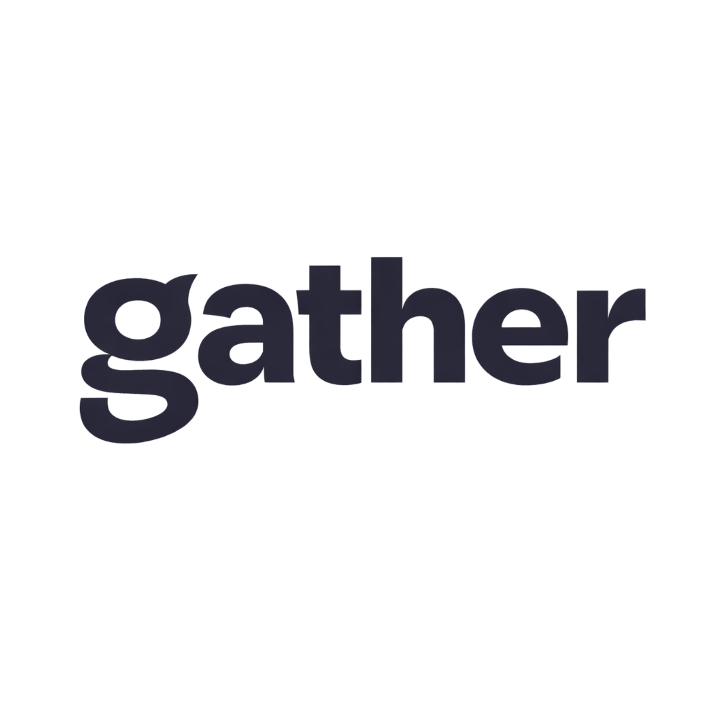
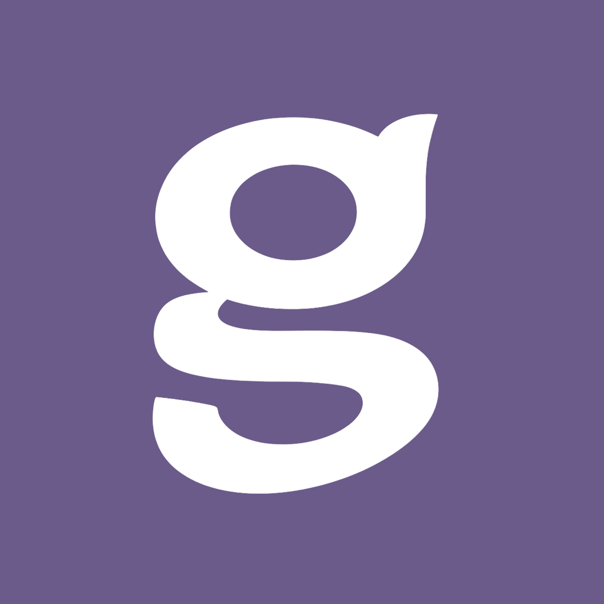

<!DOCTYPE html>
<html lang="en">
<head>
<meta charset="UTF-8">
<meta name="viewport" content="width=device-width, initial-scale=1.0">
<title>Gather — A community strategy practice</title>
<link rel="icon" href="gather-icon.png">
<link rel="preconnect" href="https://fonts.googleapis.com">
<link rel="preconnect" href="https://fonts.gstatic.com" crossorigin>
<link href="https://fonts.googleapis.com/css2?family=Fraunces:ital,opsz,wght,SOFT@0,9..144,300..900,0..100;1,9..144,300..900,0..100&family=Inter:wght@400;500;600&family=JetBrains+Mono:wght@400;500&display=swap" rel="stylesheet">
<script src="https://unpkg.com/react@18.3.1/umd/react.development.js" crossorigin="anonymous"></script>
<script src="https://unpkg.com/react-dom@18.3.1/umd/react-dom.development.js" crossorigin="anonymous"></script>
<script src="https://unpkg.com/@babel/standalone@7.29.0/babel.min.js" crossorigin="anonymous"></script>
<style>
:root {
  --paper:   #F2EDE4;
  --paper-2: #E8E2D6;
  --paper-3: #DDD6C7;
  --ink:     #1A1D2B;
  --ink-2:   #3A3D4A;
  --ink-soft: rgba(26,29,43,0.65);
  --hair:    rgba(26,29,43,0.12);
  --accent:  #6B5B8A;
  --accent-deep: #4D3F6B;
  --sage:    #C9D4C2;
  --peach:   #E8D3C0;
  --lilac:   #D4C9E0;
  --t-display: "Fraunces", serif;
  --t-display-soft: "SOFT" 100, "opsz" 144;
  --t-body:  "Inter", system-ui, sans-serif;
  --t-mono:  "JetBrains Mono", ui-monospace, monospace;
}
* { box-sizing: border-box; margin: 0; padding: 0; }
html, body { background: var(--paper); color: var(--ink); font-family: var(--t-body); font-size: 17px; line-height: 1.5; -webkit-font-smoothing: antialiased; }
body { overflow-x: hidden; }
a, button { cursor: pointer; color: inherit; text-decoration: none; font: inherit; background: none; border: 0; }
em { font-family: var(--t-display); font-variation-settings: var(--t-display-soft); font-style: italic; font-weight: 500; }

.gt-italic, .gt-italic-accent { font-family: var(--t-display); font-variation-settings: var(--t-display-soft); font-style: italic; font-weight: 500; }
.gt-italic-accent { color: var(--accent); }

/* NAV */
.gt-nav { position: sticky; top: 0; z-index: 40; display: flex; justify-content: space-between; align-items: center; padding: 20px 40px; background: var(--paper); }
.gt-brand { display: flex; align-items: center; }
.gt-brand-word-img { height: 100px; width: auto; display: block; mix-blend-mode: multiply; }
.gt-nav-right { display: flex; align-items: center; gap: 32px; }
.gt-nav-list { list-style: none; display: flex; gap: 6px; align-items: center; }
.gt-nav-link { padding: 10px 16px; border-radius: 100px; font-size: 15px; font-weight: 500; transition: all .25s; }
.gt-nav-link:hover { background: rgba(26,29,43,0.06); }
.gt-nav-link.is-active { background: var(--ink); color: var(--paper); }
.gt-hamburger { display: none; flex-direction: column; gap: 5px; background: none; border: none; cursor: pointer; padding: 8px; }
.gt-hamburger span { display: block; width: 22px; height: 2px; background: var(--ink); border-radius: 2px; transition: all .3s; }
.gt-mobile-menu { display: none; position: fixed; inset: 0; background: var(--paper); z-index: 50; flex-direction: column; justify-content: center; align-items: center; gap: 8px; }
.gt-mobile-menu.is-open { display: flex; }
.gt-mobile-menu a { font-family: var(--t-display); font-variation-settings: var(--t-display-soft); font-size: clamp(36px,8vw,64px); font-weight: 500; letter-spacing: -0.02em; padding: 8px 24px; transition: color .2s; }
.gt-mobile-menu a:hover, .gt-mobile-menu a.is-active { color: var(--accent); }
.gt-mobile-close { position: absolute; top: 24px; right: 24px; background: none; border: none; cursor: pointer; font-size: 28px; color: var(--ink); }

/* TAGS */
.gt-tag { padding: 10px 20px; border: 1px solid var(--ink); border-radius: 100px; font-size: 14px; font-weight: 500; transition: all .25s; white-space: nowrap; }
.gt-tag:hover { background: var(--ink); color: var(--paper); }
.gt-tag.is-active { background: var(--ink); color: var(--paper); }
.gt-tag-sm { padding: 8px 16px; font-size: 13px; }
.gt-mini-tag { display: inline-block; padding: 6px 12px; background: rgba(255,255,255,0.85); border: 1px solid rgba(26,29,43,0.15); border-radius: 100px; font-size: 11px; font-weight: 500; letter-spacing: 0.02em; color: var(--ink); backdrop-filter: blur(6px); }

/* REVEAL */
.gt-reveal { opacity: 0; transform: translateY(20px); transition: all .9s cubic-bezier(.2,.7,.2,1); }
.gt-reveal.is-in { opacity: 1; transform: none; }

/* HERO */
.gt-hero { max-width: 1500px; margin: 0 auto; padding: 80px 40px 48px; }
.gt-hero-sm { padding: 60px 40px 60px; }
.gt-hero-tags { display: flex; gap: 8px; margin-bottom: 48px; flex-wrap: wrap; }
.gt-hero-title { font-family: var(--t-display); font-variation-settings: var(--t-display-soft); font-size: clamp(42px, 6.5vw, 104px); font-weight: 600; line-height: 1.02; letter-spacing: -0.025em; max-width: 22ch; text-wrap: balance; }
.gt-hero-sm .gt-hero-title { font-size: clamp(36px, 5vw, 78px); max-width: 28ch; }
.gt-hero-cta { margin-top: 48px; }

/* LINK PILL */
.gt-link-pill { display: inline-flex; gap: 14px; align-items: center; padding: 18px 28px 18px 32px; background: var(--ink); color: var(--paper); border-radius: 100px; font-size: 16px; font-weight: 500; transition: all .3s; }
.gt-link-pill:hover { background: var(--accent); transform: translateY(-1px); }
.gt-arrow { display: inline-flex; align-items: center; transition: transform .3s; font-size: 18px; }
.gt-link-pill:hover .gt-arrow { transform: translate(3px,-3px); }

/* SECTIONS */
.gt-section { max-width: 1500px; margin: 0 auto; padding: 60px 40px; }
.gt-approach .gt-section { padding: 40px 40px; }
.gt-section-top { display: flex; justify-content: space-between; align-items: center; margin-bottom: 48px; gap: 20px; flex-wrap: wrap; }
.gt-eyebrow { font-family: var(--t-mono); font-size: 12px; letter-spacing: 0.12em; text-transform: uppercase; color: var(--ink-soft); }
.gt-filters { display: flex; gap: 6px; flex-wrap: wrap; }
.gt-big { font-family: var(--t-display); font-variation-settings: var(--t-display-soft); font-size: clamp(32px,4.2vw,68px); font-weight: 500; line-height: 1.08; letter-spacing: -0.02em; max-width: 28ch; margin-bottom: 60px; text-wrap: balance; }
.gt-big em { font-weight: 600; color: var(--accent); }
.gt-underline { background: linear-gradient(var(--accent),var(--accent)) no-repeat bottom left; background-size: 100% 4px; padding-bottom: 6px; }

/* WORK GRID */
.gt-work-grid { display: grid; grid-template-columns: 1fr 1fr; gap: 60px 40px; }
.gt-work-card { cursor: pointer; transition: transform .3s; }
.gt-work-card:hover { transform: translateY(-4px); }
.gt-work-visual { border-radius: 16px; overflow: hidden; aspect-ratio: 16/9; position: relative; margin-bottom: 24px; }
.gt-work-visual-tags { position: absolute; top: 16px; left: 16px; display: flex; gap: 6px; flex-wrap: wrap; }
.gt-full-svg { width: 100%; height: 100%; display: block; }
.gt-work-meta h3 { font-family: var(--t-display); font-variation-settings: var(--t-display-soft); font-size: 32px; font-weight: 500; letter-spacing: -0.015em; margin-bottom: 8px; }
.gt-work-meta p { font-size: 17px; color: var(--ink-2); margin-bottom: 16px; max-width: 42ch; }
.gt-work-link { font-family: var(--t-mono); font-size: 12px; letter-spacing: 0.1em; text-transform: uppercase; color: var(--ink); display: inline-flex; gap: 8px; align-items: center; border-bottom: 1px solid var(--ink); padding-bottom: 4px; }
.gt-work-link:hover { color: var(--accent); border-bottom-color: var(--accent); }

/* MARQUEE */
.gt-clients-section { padding: 60px 0 80px; }
.gt-clients-label { display: block; text-align: center; margin-bottom: 32px; }
.gt-logos { overflow: hidden; border-top: 1px solid var(--hair); border-bottom: 1px solid var(--hair); padding: 28px 0; }
.gt-logos-track { display: flex; gap: 80px; animation: gt-slide 50s linear infinite; width: max-content; white-space: nowrap; }
.gt-logos-item { font-family: var(--t-display); font-variation-settings: var(--t-display-soft); font-size: 32px; font-weight: 700; letter-spacing: -0.02em; color: var(--ink); opacity: 0.85; }
@keyframes gt-slide { to { transform: translateX(calc(-100% / 3)); } }

/* MANIFESTO SCROLL */
.gt-nav { transition: transform 0.4s ease; }
.gt-nav--hidden { transform: translateY(-110%); }
.gt-manifesto-scroll { height: 460vh; position: relative; }
.gt-manifesto-sticky { position: sticky; top: 0; height: 100vh; overflow: hidden; }
.gt-manifesto-stage { position: absolute; inset: 0; display: flex; flex-direction: column; justify-content: center; padding: 0 40px; opacity: 0; transform: translateY(24px); transition: opacity 0.7s ease, transform 0.7s ease; pointer-events: none; }
.gt-manifesto-stage.gt-active { opacity: 1; transform: none; pointer-events: auto; }
.gt-manifesto-stage.gt-past { opacity: 0; transform: translateY(-24px); }
.gt-manifesto-stage--bottom { justify-content: flex-end; padding-bottom: 80px; }
.gt-manifesto-q { font-family: var(--t-display); font-variation-settings: var(--t-display-soft); font-size: clamp(32px,5vw,72px); font-weight: 600; letter-spacing: -0.025em; line-height: 1.08; color: var(--ink); }
.gt-manifesto-nudge { font-family: var(--t-mono); font-size: 16px; letter-spacing: 0.03em; color: var(--accent); line-height: 1.9; margin-top: 28px; }
.gt-manifesto-eye-wrap { margin-top: 16px; display: block; }
.gt-manifesto-punch { font-size: clamp(28px,3.5vw,54px); line-height: 1.2; color: var(--ink); font-family: var(--t-display); font-variation-settings: var(--t-display-soft); font-weight: 600; letter-spacing: -0.02em; max-width: 26ch; }
.gt-manifesto-punch em { color: var(--accent); font-style: italic; }
.gt-manifesto-follow { font-family: var(--t-display); font-variation-settings: var(--t-display-soft); font-size: clamp(28px,3.5vw,54px); font-weight: 600; letter-spacing: -0.02em; line-height: 1.2; color: var(--ink); max-width: 30ch; }
.gt-inline-logo { font-family: var(--t-display); font-variation-settings: var(--t-display-soft); color: var(--accent); font-style: normal; font-size: 0.88em; letter-spacing: -0.03em; font-weight: 700; }
.gt-manifesto-eye-wrap { margin-top: 8px; display: block; }
@keyframes gt-eye-blink {
  0%, 30%, 100% { transform: scaleY(1); }
  44%, 56% { transform: scaleY(0.06); }
}
.gt-eye-all { animation: gt-eye-blink 4s ease-in-out infinite; transform-origin: 48px 24px; transform-box: fill-box; }

/* PROMISE BLOCK */
.gt-promise { background: var(--accent); padding: 100px 40px; }
.gt-promise-inner { max-width: 900px; margin: 0 auto; display: flex; flex-direction: column; gap: 0; }
.gt-promise-line { font-family: var(--t-display); font-variation-settings: var(--t-display-soft); font-weight: 600; letter-spacing: -0.025em; line-height: 1.1; color: rgba(255,255,255,0.45); font-size: clamp(24px,3vw,48px); padding: 20px 0; border-bottom: 1px solid rgba(255,255,255,0.15); opacity: 0; transform: translateY(10px); transition: opacity 0.7s ease, transform 0.7s ease, color 0.7s ease; }
.gt-promise-line:first-child { border-top: 1px solid rgba(255,255,255,0.15); }
.gt-promise-line.gt-in { opacity: 1; transform: none; }
.gt-promise-line:last-child { color: white; font-size: clamp(32px,4.5vw,72px); border-bottom: none; padding-top: 32px; }

/* WHY NOW */
.gt-why-now { max-width: 1500px; margin: 0 auto; padding: 48px 40px 120px; border-top: 1px solid var(--hair); }
.gt-why-intro { font-family: var(--t-display); font-variation-settings: var(--t-display-soft); font-size: clamp(28px,3.5vw,54px); font-weight: 600; letter-spacing: -0.02em; line-height: 1.1; color: var(--ink); max-width: 22ch; margin-bottom: 80px; }
.gt-why-intro em { color: var(--accent); font-style: italic; }
.gt-why-cols { display: grid; grid-template-columns: 1fr 1fr; gap: 60px; align-items: start; }
@media (max-width: 640px) { .gt-why-cols { grid-template-columns: 1fr; gap: 60px; } }
.gt-why-col-label { font-family: var(--t-mono); font-size: 13px; letter-spacing: 0.08em; text-transform: uppercase; color: var(--ink-2); margin-bottom: 28px; padding-bottom: 16px; border-bottom: 1px solid var(--hair); }
.gt-why-can { display: flex; flex-direction: column; gap: 6px; }
.gt-why-item { font-family: var(--t-display); font-variation-settings: var(--t-display-soft); font-size: clamp(22px,2vw,34px); font-weight: 600; letter-spacing: -0.02em; line-height: 1.15; color: var(--ink-soft); opacity: 0; text-decoration: line-through; text-decoration-color: var(--accent); text-decoration-thickness: 3px; transition: opacity 0.25s; }
.gt-why-item.gt-in { opacity: 1; }
.gt-why-cant { display: flex; flex-direction: column; gap: 4px; }
.gt-why-cant-item { font-family: var(--t-display); font-variation-settings: var(--t-display-soft); font-size: clamp(30px,3.5vw,58px); font-weight: 600; letter-spacing: -0.03em; line-height: 1.1; color: var(--ink); opacity: 0; transform: translateY(10px); transition: opacity 0.6s, transform 0.6s; }
.gt-why-cant-item.gt-in { opacity: 1; transform: none; }

/* AI LIST */
.gt-ai-block { max-width: 1500px; margin: 0 auto; padding: 80px 40px; border-top: 1px solid var(--hair); }
.gt-ai-eyebrow { font-family: var(--t-mono); font-size: 11px; letter-spacing: 0.12em; text-transform: uppercase; color: var(--ink-soft); margin-bottom: 32px; }
.gt-ai-list { display: flex; flex-wrap: wrap; gap: 12px; margin-top: 24px; }
.gt-ai-item { font-family: var(--t-display); font-variation-settings: var(--t-display-soft); font-size: clamp(28px,3.5vw,52px); font-weight: 600; letter-spacing: -0.02em; color: var(--ink); opacity: 0.18; transition: opacity .3s; }
.gt-ai-item:hover { opacity: 1; }
.gt-ai-item.gt-ai-highlight { opacity: 1; color: var(--accent); }
.gt-ai-sep { font-size: clamp(28px,3.5vw,52px); color: var(--hair); align-self: center; }
.gt-ai-intro { font-size: 20px; color: var(--ink-2); max-width: 52ch; line-height: 1.5; }

/* MISSION */
.gt-mission { font-family: var(--t-display); font-variation-settings: var(--t-display-soft); font-size: clamp(36px,5vw,72px); font-weight: 600; letter-spacing: -0.025em; line-height: 1.05; margin-bottom: 8px; }
.gt-mission-label { font-family: var(--t-mono); font-size: 11px; letter-spacing: 0.12em; text-transform: uppercase; color: var(--ink-soft); margin-bottom: 20px; }

/* SPLIT */
.gt-split { max-width: 1500px; margin: 0 auto; padding: 80px 40px; }
.gt-split-row { display: grid; gap: 40px; align-items: center; margin-bottom: 32px; }
.gt-split-row-1 { grid-template-columns: 1fr 1fr; }
.gt-split-row-2 { grid-template-columns: 1fr 1fr; }
.gt-split-h { font-family: var(--t-display); font-variation-settings: var(--t-display-soft); font-size: clamp(60px,11vw,180px); font-weight: 600; line-height: 0.95; letter-spacing: -0.035em; }
.gt-split-h em { color: var(--accent); }
.gt-split-h-right { text-align: right; }
.gt-split-visual { aspect-ratio: 5/3; border-radius: 16px; overflow: hidden; }
.gt-split-body { margin-top: 48px; display: flex; justify-content: space-between; gap: 40px; align-items: flex-end; flex-wrap: wrap; }
.gt-split-body p { font-size: 22px; line-height: 1.5; max-width: 52ch; color: var(--ink-2); text-wrap: pretty; }

/* INSIGHTS */
.gt-insights { max-width: 1500px; margin: 0 auto; padding: 80px 40px 120px; }
.gt-insights-h { font-family: var(--t-display); font-variation-settings: var(--t-display-soft); font-size: 44px; font-weight: 600; letter-spacing: -0.02em; }
.gt-view-all { font-family: var(--t-mono); font-size: 13px; letter-spacing: 0.08em; text-transform: uppercase; padding: 10px 18px; border: 1px solid var(--ink); border-radius: 100px; transition: all .25s; }
.gt-view-all:hover { background: var(--ink); color: var(--paper); }
.gt-insights-grid { display: grid; grid-template-columns: repeat(3,1fr); gap: 32px; }
.gt-insights-grid-full { margin-top: 20px; }
.gt-insight-card { cursor: pointer; transition: transform .3s; }
.gt-insight-card:hover { transform: translateY(-4px); }
.gt-insight-visual { border-radius: 14px; overflow: hidden; aspect-ratio: 5/3; margin-bottom: 20px; }
.gt-insight-meta { padding: 0 4px; }
.gt-insight-row { display: flex; gap: 12px; align-items: center; margin-bottom: 12px; }
.gt-insight-mins { font-family: var(--t-mono); font-size: 11px; letter-spacing: 0.08em; color: var(--ink-soft); text-transform: uppercase; }
.gt-insight-meta h3 { font-family: var(--t-display); font-variation-settings: var(--t-display-soft); font-size: 24px; font-weight: 500; line-height: 1.2; letter-spacing: -0.015em; }

/* LAYER CARDS */
.gt-layer-grid { display: grid; grid-template-columns: repeat(2,1fr); gap: 20px; }
.gt-layer-card { padding: 40px; border-radius: 16px; min-height: 280px; display: flex; flex-direction: column; justify-content: space-between; transition: transform .3s; }
.gt-layer-card:hover { transform: translateY(-4px); }
.gt-layer-card-n { font-family: var(--t-mono); font-size: 12px; letter-spacing: 0.12em; color: var(--ink); margin-bottom: 48px; }
.gt-layer-card h3 { font-family: var(--t-display); font-variation-settings: var(--t-display-soft); font-size: 42px; font-weight: 600; margin-bottom: 16px; letter-spacing: -0.02em; }
.gt-layer-card p { font-size: 16px; color: var(--ink); max-width: 36ch; }

/* HOW WE WORK */
.gt-how-list { display: flex; flex-direction: column; }
.gt-how-row-v2 { display: grid; grid-template-columns: 60px 200px 140px 1fr; gap: 40px; padding: 40px 0; border-top: 1px solid var(--hair); align-items: baseline; }
.gt-how-row-v2:last-child { border-bottom: 1px solid var(--hair); }
.gt-how-row-n { font-family: var(--t-mono); font-size: 13px; color: var(--accent); letter-spacing: 0.1em; }
.gt-how-row-v2 h3 { font-family: var(--t-display); font-variation-settings: var(--t-display-soft); font-size: 36px; font-weight: 600; letter-spacing: -0.02em; }
.gt-how-row-dur { font-family: var(--t-mono); font-size: 12px; letter-spacing: 0.08em; color: var(--ink-soft); }
.gt-how-row-v2 p { font-size: 17px; color: var(--ink-2); max-width: 54ch; }

/* STUDIO */
.gt-studio-grid { display: grid; grid-template-columns: 1fr 1.4fr; gap: 60px; }
.gt-studio-photo { aspect-ratio: 4/5; border-radius: 16px; overflow: hidden; position: relative; }
.gt-photo-cap { position: absolute; bottom: 16px; left: 16px; padding: 8px 14px; background: rgba(242,237,228,0.95); border-radius: 100px; font-family: var(--t-mono); font-size: 12px; letter-spacing: 0.06em; }
.gt-studio-text .gt-studio-lede { font-family: var(--t-display); font-variation-settings: var(--t-display-soft); font-size: 32px; font-weight: 500; line-height: 1.25; margin-bottom: 24px; letter-spacing: -0.015em; }
.gt-studio-text p { font-size: 17px; color: var(--ink-2); margin-bottom: 16px; max-width: 52ch; }

.gt-beliefs-v2 { list-style: none; counter-reset: b; }
.gt-beliefs-v2 li { display: grid; grid-template-columns: 80px 1fr; gap: 40px; padding: 32px 0; border-top: 1px solid var(--hair); align-items: baseline; }
.gt-beliefs-v2 li:last-child { border-bottom: 1px solid var(--hair); }
.gt-b-n { font-family: var(--t-mono); font-size: 12px; color: var(--accent); letter-spacing: 0.12em; }
.gt-b-t { font-family: var(--t-display); font-variation-settings: var(--t-display-soft); font-size: clamp(24px,3.2vw,44px); font-weight: 500; line-height: 1.15; letter-spacing: -0.015em; text-wrap: balance; }

/* CONTACT */
.gt-contact-v2 { display: grid; grid-template-columns: 1fr 1.2fr; gap: 60px; }
.gt-contact-meta { list-style: none; display: flex; flex-direction: column; gap: 12px; margin-bottom: 40px; }
.gt-contact-meta li { font-size: 15px; color: var(--ink-2); display: flex; gap: 10px; }
.gt-contact-meta span { color: var(--accent); }
.gt-big-link { font-family: var(--t-display); font-variation-settings: var(--t-display-soft); font-size: clamp(32px,3.6vw,52px); font-weight: 500; letter-spacing: -0.02em; display: inline-block; border-bottom: 2px solid var(--ink); padding-bottom: 6px; margin-bottom: 40px; }
.gt-big-link:hover { color: var(--accent); border-bottom-color: var(--accent); }
.gt-contact-address { font-family: var(--t-mono); font-size: 12px; letter-spacing: 0.06em; color: var(--ink-soft); line-height: 1.8; }
.gt-contact-address p { margin-bottom: 12px; }
.gt-contact-form-v2 { display: grid; grid-template-columns: 1fr 1fr; gap: 20px; }
.gt-field-v2 { display: flex; flex-direction: column; gap: 8px; }
.gt-field-wide { grid-column: 1 / -1; }
.gt-field-v2 span { font-family: var(--t-mono); font-size: 11px; letter-spacing: 0.1em; text-transform: uppercase; color: var(--ink-soft); }
.gt-field-v2 input, .gt-field-v2 textarea { padding: 14px 16px; border: 1px solid var(--hair); border-radius: 10px; background: var(--paper-2); font-family: var(--t-body); font-size: 16px; outline: none; transition: border-color .2s; }
.gt-field-v2 input:focus, .gt-field-v2 textarea:focus { border-color: var(--accent); }
.gt-submit { grid-column: 1 / -1; padding: 18px 28px; background: var(--ink); color: var(--paper); border-radius: 100px; font-size: 16px; font-weight: 500; display: inline-flex; gap: 12px; align-items: center; justify-content: center; transition: all .3s; }
.gt-submit:hover { background: var(--accent); }
.gt-contact-sent-v2 { grid-column: 1 / -1; padding: 60px 40px; background: var(--peach); border-radius: 16px; text-align: center; }
.gt-contact-sent-v2 h3 { font-family: var(--t-display); font-variation-settings: var(--t-display-soft); font-size: 42px; font-weight: 500; margin-bottom: 12px; }

/* FOOTER */
.gt-footer { background: var(--paper); border-top: 1px solid var(--hair); }
.gt-footer-cta { padding: 80px 40px; border-bottom: 1px solid var(--hair); }
.gt-footer-cta-inner { max-width: 1500px; margin: 0 auto; display: grid; grid-template-columns: auto 1fr auto; gap: 40px; align-items: center; }
.gt-footer-photo { width: 120px; height: 120px; border-radius: 50%; overflow: hidden; position: relative; }
.gt-footer-photo-label { position: absolute; bottom: -8px; left: 50%; transform: translateX(-50%); padding: 6px 14px; background: var(--ink); color: var(--paper); border-radius: 100px; font-family: var(--t-mono); font-size: 11px; letter-spacing: 0.08em; white-space: nowrap; }
.gt-footer-cta-h { font-family: var(--t-display); font-variation-settings: var(--t-display-soft); font-size: clamp(40px,5vw,76px); font-weight: 500; line-height: 1.02; letter-spacing: -0.025em; }
.gt-footer-cta-h em { color: var(--accent); }
.gt-footer-cta-btn { display: inline-flex; gap: 14px; align-items: center; padding: 22px 34px; background: var(--ink); color: var(--paper); border-radius: 100px; font-size: 16px; font-weight: 500; transition: all .3s; }
.gt-footer-cta-btn:hover { background: var(--accent); transform: translateY(-2px); }
.gt-footer-main { padding: 60px 40px 40px; }
.gt-footer-grid { max-width: 1500px; margin: 0 auto; display: grid; grid-template-columns: 1.6fr 1fr; gap: 48px; padding-bottom: 60px; }
.gt-footer-logo { height: 36px; width: auto; margin-bottom: 24px; mix-blend-mode: multiply; }
.gt-footer-g { height: 120px; width: auto; margin-bottom: 24px; display: block; }
.gt-footer-lead p { font-size: 15px; color: var(--ink-2); max-width: 34ch; margin-bottom: 32px; }
.gt-footer-badge { position: relative; width: 110px; height: 110px; margin-bottom: 16px; }
.gt-badge-circle { position: absolute; inset: 0; border-radius: 50%; border: 1px solid var(--ink); animation: gt-rotate 20s linear infinite; display: flex; align-items: center; justify-content: center; font-family: var(--t-mono); font-size: 8.5px; letter-spacing: 0.1em; padding: 0; }
.gt-badge-circle span { position: absolute; left: 50%; top: 6px; transform-origin: 0 49px; }
.gt-badge-circle span:nth-child(1) { transform: translateX(-50%) rotate(0deg); }
.gt-badge-circle span:nth-child(2) { transform: translateX(-50%) rotate(45deg); }
.gt-badge-circle span:nth-child(3) { transform: translateX(-50%) rotate(90deg); }
.gt-badge-circle span:nth-child(4) { transform: translateX(-50%) rotate(135deg); }
.gt-badge-circle span:nth-child(5) { transform: translateX(-50%) rotate(180deg); }
.gt-badge-circle span:nth-child(6) { transform: translateX(-50%) rotate(225deg); }
.gt-badge-center { position: absolute; inset: 0; display: grid; place-items: center; font-family: var(--t-display); font-variation-settings: var(--t-display-soft); font-weight: 700; font-size: 22px; line-height: 0.9; text-align: center; pointer-events: none; }
@keyframes gt-rotate { to { transform: rotate(360deg); } }
.gt-footer-contact-link { font-family: var(--t-mono); font-size: 13px; letter-spacing: 0.04em; color: var(--ink); border-bottom: 1px solid var(--hair); padding-bottom: 3px; transition: color .2s, border-color .2s; }
.gt-footer-contact-link:hover { color: var(--accent); border-bottom-color: var(--accent); }
.gt-footer-k { font-family: var(--t-mono); font-size: 11px; letter-spacing: 0.12em; text-transform: uppercase; color: var(--ink-soft); margin-bottom: 18px; }
.gt-footer-links { list-style: none; display: flex; flex-direction: column; gap: 10px; }
.gt-footer-links a { font-size: 15px; transition: color .2s; }
.gt-footer-links a:hover { color: var(--accent); }
.gt-footer-signup p { font-size: 14px; color: var(--ink-2); margin-bottom: 16px; max-width: 34ch; }
.gt-footer-input { display: flex; gap: 8px; padding: 6px; border: 1px solid var(--ink); border-radius: 100px; margin-bottom: 12px; }
.gt-footer-input input { flex: 1; border: 0; background: transparent; padding: 6px 14px; outline: none; font-size: 14px; font-family: var(--t-body); }
.gt-footer-input button { width: 36px; height: 36px; background: var(--ink); color: var(--paper); border-radius: 50%; }
.gt-footer-legal { font-family: var(--t-mono); font-size: 10px; letter-spacing: 0.06em; color: var(--ink-soft); }
.gt-footer-base { max-width: 1500px; margin: 0 auto; padding-top: 32px; border-top: 1px solid var(--hair); display: flex; justify-content: space-between; gap: 20px; flex-wrap: wrap; font-family: var(--t-mono); font-size: 11px; color: var(--ink-soft); letter-spacing: 0.06em; }

/* CASE PAGES */
.gt-case-back { max-width: 1500px; margin: 0 auto; padding: 32px 40px 0; }
.gt-case-back a { font-family: var(--t-mono); font-size: 12px; letter-spacing: 0.1em; text-transform: uppercase; color: var(--ink-soft); display: inline-flex; gap: 8px; align-items: center; transition: color .2s; }
.gt-case-back a:hover { color: var(--accent); }
.gt-case-hero { max-width: 1500px; margin: 0 auto; padding: 48px 40px 80px; }
.gt-case-tags { display: flex; gap: 8px; flex-wrap: wrap; margin-bottom: 40px; }
.gt-case-title { font-family: var(--t-display); font-variation-settings: var(--t-display-soft); font-size: clamp(52px,8vw,120px); font-weight: 600; line-height: 0.95; letter-spacing: -0.03em; margin-bottom: 36px; }
.gt-case-lede { font-size: clamp(20px,2.4vw,30px); line-height: 1.4; color: var(--ink-2); max-width: 52ch; font-family: var(--t-display); font-variation-settings: var(--t-display-soft); font-weight: 400; letter-spacing: -0.01em; }
.gt-case-visual-hero { margin: 0 0 80px; border-radius: 20px; overflow: hidden; aspect-ratio: 16/7; }
.gt-case-stats { max-width: 1500px; margin: 0 auto; padding: 0 40px 80px; display: grid; grid-template-columns: repeat(4,1fr); gap: 1px; background: var(--hair); border: 1px solid var(--hair); border-radius: 16px; overflow: hidden; }
.gt-case-stat { background: var(--paper); padding: 40px 32px; }
.gt-case-stat-n { font-family: var(--t-display); font-variation-settings: var(--t-display-soft); font-size: clamp(36px,4vw,60px); font-weight: 600; letter-spacing: -0.03em; color: var(--accent); line-height: 1; margin-bottom: 8px; }
.gt-case-stat-l { font-family: var(--t-mono); font-size: 13px; letter-spacing: 0.08em; text-transform: uppercase; color: var(--ink-soft); }
.gt-case-content { max-width: 1500px; margin: 0 auto; padding: 0 40px 80px; display: grid; grid-template-columns: 1.1fr 0.9fr; gap: 80px; align-items: start; }
.gt-case-content-full { grid-template-columns: 1fr; max-width: 860px; }
.gt-case-chapters { display: flex; flex-direction: column; gap: 64px; }
.gt-case-ch-label { font-family: var(--t-mono); font-size: 11px; letter-spacing: 0.12em; text-transform: uppercase; color: var(--accent); margin-bottom: 16px; }
.gt-case-ch h3 { font-family: var(--t-display); font-variation-settings: var(--t-display-soft); font-size: clamp(28px,3vw,44px); font-weight: 600; letter-spacing: -0.02em; margin-bottom: 20px; line-height: 1.1; }
.gt-case-ch p { font-size: 17px; line-height: 1.7; color: var(--ink-2); max-width: 54ch; margin-bottom: 16px; }
.gt-case-aside { display: flex; flex-direction: column; gap: 32px; position: sticky; top: 100px; }
.gt-case-aside-card { padding: 32px; background: var(--paper-2); border-radius: 16px; }
.gt-case-aside-card h4 { font-family: var(--t-mono); font-size: 11px; letter-spacing: 0.12em; text-transform: uppercase; color: var(--ink-soft); margin-bottom: 20px; }
.gt-case-aside-card ul { list-style: none; display: flex; flex-direction: column; gap: 10px; }
.gt-case-aside-card li { font-size: 15px; color: var(--ink-2); display: flex; gap: 10px; align-items: baseline; }
.gt-case-aside-card li::before { content: '—'; color: var(--accent); font-size: 12px; flex-shrink: 0; }
.gt-case-quote { background: var(--peach); border-radius: 16px; padding: 40px; margin: 40px 0; }
.gt-case-quote p { font-family: var(--t-display); font-variation-settings: var(--t-display-soft); font-size: clamp(22px,2.4vw,32px); font-weight: 500; letter-spacing: -0.015em; line-height: 1.3; }
.gt-case-quote cite { display: block; font-family: var(--t-mono); font-size: 11px; letter-spacing: 0.08em; text-transform: uppercase; color: var(--ink-soft); margin-top: 16px; font-style: normal; }
.gt-case-nav { max-width: 1500px; margin: 0 auto; padding: 80px 40px; border-top: 1px solid var(--hair); display: flex; justify-content: space-between; gap: 40px; align-items: center; flex-wrap: wrap; }
.gt-case-nav-next h4 { font-family: var(--t-mono); font-size: 11px; letter-spacing: 0.1em; text-transform: uppercase; color: var(--ink-soft); margin-bottom: 12px; }
.gt-case-nav-next h3 { font-family: var(--t-display); font-variation-settings: var(--t-display-soft); font-size: clamp(24px,3vw,40px); font-weight: 500; letter-spacing: -0.02em; }
.gt-case-nav-next h3 a { transition: color .2s; }
.gt-case-nav-next h3 a:hover { color: var(--accent); }
.gt-case-outcome { font-family: var(--t-mono); font-size: 13px; letter-spacing: 0.06em; text-transform: uppercase; color: var(--accent); margin-bottom: 28px; }
.gt-case-cta { max-width: 1500px; margin: 0 auto 0; padding: 80px 40px; border-top: 1px solid var(--hair); display: grid; grid-template-columns: 1fr auto; gap: 40px; align-items: center; }
.gt-case-cta-text h2 { font-family: var(--t-display); font-variation-settings: var(--t-display-soft); font-size: clamp(28px,3.5vw,52px); font-weight: 600; letter-spacing: -0.02em; line-height: 1.1; margin-bottom: 12px; }
.gt-case-cta-text p { font-size: 17px; color: var(--ink-2); max-width: 44ch; }
.gt-case-client-quote { max-width: 1500px; margin: 0 auto; padding: 0 40px 80px; }
.gt-case-client-quote blockquote { background: var(--ink); color: var(--paper); border-radius: 20px; padding: 56px 64px; }
.gt-case-client-quote blockquote p { font-family: var(--t-display); font-variation-settings: var(--t-display-soft); font-size: clamp(22px,2.4vw,34px); font-weight: 500; letter-spacing: -0.015em; line-height: 1.35; margin-bottom: 32px; }
.gt-case-client-quote blockquote footer { font-family: var(--t-mono); font-size: 12px; letter-spacing: 0.08em; text-transform: uppercase; color: rgba(242,237,228,0.55); }
@media (max-width: 768px) {
  .gt-case-cta { grid-template-columns: 1fr; }
  .gt-case-client-quote blockquote { padding: 40px 32px; }
}

/* RESPONSIVE */
@media (max-width: 960px) {
  .gt-nav { padding: 14px 20px; }
  .gt-nav-list { display: none; }
  .gt-hamburger { display: flex; }
  .gt-hero, .gt-section, .gt-split, .gt-insights { padding-left: 20px; padding-right: 20px; }
  .gt-work-grid { grid-template-columns: 1fr; gap: 40px; }
  .gt-layer-grid { grid-template-columns: 1fr; }
  .gt-insights-grid { grid-template-columns: 1fr; }
  .gt-split-row-1, .gt-split-row-2 { grid-template-columns: 1fr; }
  .gt-split-h-right { text-align: left; }
  .gt-studio-grid { grid-template-columns: 1fr; gap: 40px; }
  .gt-contact-v2 { grid-template-columns: 1fr; }
  .gt-contact-form-v2 { grid-template-columns: 1fr; }
  .gt-footer-cta-inner { grid-template-columns: 1fr; text-align: center; }
  .gt-footer-grid { grid-template-columns: 1fr; }
  .gt-how-row-v2 { grid-template-columns: 1fr; gap: 8px; }
  .gt-case-stats { grid-template-columns: 1fr 1fr; }
  .gt-case-content { grid-template-columns: 1fr; }
  .gt-case-aside { position: static; }
  .gt-case-back, .gt-case-hero, .gt-case-stats, .gt-case-content, .gt-case-nav { padding-left: 20px; padding-right: 20px; }
}
</style>
</head>
<body>
<div id="root"></div>

<script type="text/babel">
const { useState, useEffect, useRef } = React;

// ─── Reveal ───────────────────────────────────────────────────────────────────
const Reveal = ({ children, delay = 0, className = '' }) => {
  const ref = useRef(null);
  const [shown, setShown] = useState(false);
  useEffect(() => {
    const el = ref.current;
    if (!el) return;
    const rect = el.getBoundingClientRect();
    if (rect.top < window.innerHeight && rect.bottom > 0) { setShown(true); return; }
    const io = new IntersectionObserver(([e]) => {
      if (e.isIntersecting) { setShown(true); io.disconnect(); }
    }, { threshold: 0.05, rootMargin: '0px 0px -5% 0px' });
    io.observe(el);
    const t = setTimeout(() => setShown(true), 1500);
    return () => { io.disconnect(); clearTimeout(t); };
  }, []);
  return (
    <div ref={ref} className={`gt-reveal ${shown ? 'is-in' : ''} ${className}`} style={{ transitionDelay: `${delay}ms` }}>
      {children}
    </div>
  );
};

// ─── TagPill ──────────────────────────────────────────────────────────────────
const TagPill = ({ children, active, onClick, size = 'md' }) => (
  <button className={`gt-tag gt-tag-${size} ${active ? 'is-active' : ''}`} onClick={onClick}>{children}</button>
);

// ─── LogoMarquee ──────────────────────────────────────────────────────────────
const LogoMarquee = ({ items }) => (
  <div className="gt-logos" aria-hidden>
    <div className="gt-logos-track">
      {[...items, ...items, ...items].map((t, i) => <span key={i} className="gt-logos-item">{t}</span>)}
    </div>
  </div>
);

// ─── Nav ─────────────────────────────────────────────────────────────────────
const Nav = ({ page, setPage }) => {
  const [menuOpen, setMenuOpen] = useState(false);
  const items = [
    { id: 'home',     label: 'Work'     },
    { id: 'approach', label: 'Approach' },
    { id: 'studio',   label: 'About'    },
    { id: 'insights', label: 'Insights' },
    { id: 'contact',  label: 'Contact'  },
  ];
  const go = (id) => { setPage(id); setMenuOpen(false); };
  return (
    <>
      <nav className="gt-nav">
        <a className="gt-brand" onClick={() => go('home')} style={{cursor:'pointer'}}>
           { e.target.style.display='none'; e.target.nextSibling.style.display='block'; }} />
          <span style={{display:'none', fontFamily:'var(--t-display)', fontSize:'28px', fontWeight:700, letterSpacing:'-0.03em'}}>gather</span>
        </a>
        <div className="gt-nav-right">
          <ul className="gt-nav-list">
            {items.map(it => (
              <li key={it.id}>
                <a className={`gt-nav-link ${page === it.id ? 'is-active' : ''}`} onClick={() => go(it.id)}>{it.label}</a>
              </li>
            ))}
          </ul>
          <button className="gt-hamburger" onClick={() => setMenuOpen(true)} aria-label="Menu">
            <span /><span /><span />
          </button>
        </div>
      </nav>
      <div className={`gt-mobile-menu ${menuOpen ? 'is-open' : ''}`}>
        <button className="gt-mobile-close" onClick={() => setMenuOpen(false)}>✕</button>
        {items.map(it => (
          <a key={it.id} className={page === it.id ? 'is-active' : ''} onClick={() => go(it.id)} style={{cursor:'pointer'}}>{it.label}</a>
        ))}
      </div>
    </>
  );
};

// ─── Footer ───────────────────────────────────────────────────────────────────
const Footer = ({ setPage }) => {
  const now = new Date();
  const hh = String(now.getHours()).padStart(2,'0');
  const mm = String(now.getMinutes()).padStart(2,'0');
  return (
    <footer className="gt-footer">
      <div className="gt-footer-main">
        <div className="gt-footer-grid">
          <div className="gt-footer-col gt-footer-lead">
            
            <p>A community strategy practice — helping organisations turn audiences into members, with care and intent.</p>
            <a className="gt-footer-contact-link" href="mailto:anton.aerts1@gmail.com">anton.aerts1@gmail.com →</a>
          </div>
          <div className="gt-footer-col">
            <div className="gt-footer-k">Pages</div>
            <ul className="gt-footer-links">
              <li><a onClick={() => setPage('home')} style={{cursor:'pointer'}}>Work</a></li>
              <li><a onClick={() => setPage('approach')} style={{cursor:'pointer'}}>Approach</a></li>
              <li><a onClick={() => setPage('studio')} style={{cursor:'pointer'}}>About</a></li>
              <li><a onClick={() => setPage('insights')} style={{cursor:'pointer'}}>Insights</a></li>
              <li><a onClick={() => setPage('contact')} style={{cursor:'pointer'}}>Contact</a></li>
            </ul>
          </div>
        </div>
        <div className="gt-footer-base">
          <span>© Gather {new Date().getFullYear()}</span>
          <span>Antwerp · CET {hh}:{mm}</span>
        </div>
      </div>
    </footer>
  );
};

// ─── SVG Art ─────────────────────────────────────────────────────────────────
const ProjectArt = ({ p }) => {
  if (p.id === 1) return (
    <svg viewBox="0 0 400 300" preserveAspectRatio="xMidYMid slice" className="gt-full-svg">
      <rect width="400" height="300" fill="#C9D4C2" />
      <svg x="152" y="80" width="96" height="117" viewBox="0 0 46 56">
        <path d="M275.969,1041.124a3.2,3.2,0,0,0-2.035,1.383c-.518,1.011,1.694,2.219,9.076,2.057,5.012-.109,9.319-1.2,9.319-2.339,0-.551-1.013-.984-2.627-1.285a11.859,11.859,0,0,1-13.733.184Z" transform="translate(-252.619 -989.445)" fill="#bee4e5"/>
        <path d="M207.689,753.5c-.371-.752-2.09.2-2.09.2s.876-1.238.143-1.685c-.916-.558-1.755.912-1.954,1.586,0,0-.056.291-.129.646-1.5-1.3-4.51-.956-7.784-1.865A18.768,18.768,0,0,0,207.1,735.3,20.547,20.547,0,0,0,202.579,722c1.857-1.183,4.867-3.333,4.491-4.615-.462-1.573-3.585,1.258-3.585,1.258s2.031-2.606,1.313-3.5c-.863-1.07-2.824,1.51-2.824,1.51s1.648-2.512.847-3.79c-.7-1.117-2.334,3.372-3.308,6.357a17.215,17.215,0,0,0-11.653-2.7c-11.737,1.115-18.474,8.439-19.242,18.784a16.665,16.665,0,0,0,.14,3.751,11.628,11.628,0,0,0,6.343.1,6.594,6.594,0,0,1-3.459,5.436,2.527,2.527,0,0,1-.816.259,19.368,19.368,0,0,0,13.384,8.922,5.543,5.543,0,0,0-1,3.254,9.051,9.051,0,0,0,3.987,7.345,11.859,11.859,0,0,0,13.733-.185,9,9,0,0,0,3.738-7.161,4.933,4.933,0,0,0-.221-1.569C205.912,755.248,208.252,754.646,207.689,753.5Zm-25.134-13.2c-1.047,0-1.047-.709-1.047-1.584a1.512,1.512,0,0,1,1.663-1.585c.6.128.646.71.646,1.585S183.465,740.307,182.556,740.307Z" transform="translate(-163.846 -712.688)" fill="#ffb72d"/>
        <path d="M149.708,867.472a11.629,11.629,0,0,1-6.343-.1,9.033,9.033,0,0,1-4.03-2.492c-3.059,2.659,2.54,8.8,6.1,8.283a2.527,2.527,0,0,0,.816-.259A6.594,6.594,0,0,0,149.708,867.472Z" transform="translate(-138.453 -841.007)" fill="#e03818"/>
        <path d="M252.706,868.393a1.512,1.512,0,0,0-1.663,1.585c0,.875,0,1.584,1.047,1.584.909,0,1.261-.709,1.261-1.584S253.308,868.521,252.706,868.393Z" transform="translate(-233.38 -843.944)" fill="#344741"/>
      </svg>
    </svg>
  );
  if (p.id === 2) return (
    <svg viewBox="0 0 400 300" preserveAspectRatio="xMidYMid slice" className="gt-full-svg">
      <rect width="400" height="300" fill="#EDE5D8" />
      <svg x="30" y="86" width="340" height="128" viewBox="0 0 399 150">
        <path d="M370.525 105.12V129.328H358.961V84.9046H369.61V91.227C372.854 86.818 377.43 84.0727 383.253 84.0727C392.154 84.0727 398.31 89.896 398.31 100.627V129.328H386.83V104.537C386.83 97.9654 384.251 94.305 379.01 94.305C374.435 94.305 370.525 97.9654 370.525 105.12Z" fill="#100914"/>
        <path d="M339.596 129.328V123.837C336.685 127.997 332.276 130.16 326.203 130.16C316.969 130.16 310.813 124.753 310.813 116.434C310.813 107.782 317.801 103.123 330.778 103.123C333.274 103.123 335.437 103.29 338.182 103.622V100.96C338.182 95.9688 335.354 93.0572 330.529 93.0572C325.537 93.0572 322.543 95.9688 322.127 100.96H311.728C312.393 90.7279 319.797 84.0727 330.529 84.0727C342.175 84.0727 348.997 90.4783 348.997 101.376V129.328H339.596ZM321.711 116.101C321.711 119.844 324.373 122.174 328.699 122.174C334.605 122.174 338.182 118.929 338.182 113.771V110.61C335.437 110.194 333.524 110.028 331.527 110.028C324.955 110.028 321.711 112.108 321.711 116.101Z" fill="#100914"/>
        <path d="M278.074 129.328H266.51V69.5977H278.074V103.705L294.296 84.9046H307.606L289.221 106.201L309.769 129.328H295.044L278.074 108.697V129.328Z" fill="#100914"/>
        <path d="M237.635 130.077C224.325 130.077 215.423 120.843 215.423 106.95C215.423 93.7227 224.657 84.0727 237.469 84.0727C251.528 84.0727 260.845 95.4697 258.765 109.945H227.236C227.985 117.182 231.479 121.175 237.385 121.175C242.46 121.175 245.871 118.68 247.202 114.271H258.682C256.186 124.337 248.45 130.077 237.635 130.077ZM237.219 92.5581C231.812 92.5581 228.401 96.052 227.403 102.624H246.536C246.204 96.468 242.71 92.5581 237.219 92.5581Z" fill="#100914"/>
        <path d="M188.411 130.16C175.517 130.16 165.867 120.011 165.867 107.116C165.867 94.1387 175.517 84.0727 188.411 84.0727C201.306 84.0727 210.956 94.1387 210.956 107.116C210.956 120.011 201.306 130.16 188.411 130.16ZM188.411 119.927C194.151 119.927 199.06 115.352 199.06 107.116C199.06 98.8805 194.151 94.3882 188.411 94.3882C182.671 94.3882 177.763 98.8805 177.763 107.116C177.763 115.352 182.671 119.927 188.411 119.927Z" fill="#100914"/>
        <path d="M162.277 118.097V128.163C159.448 129.578 156.786 130.16 153.375 130.16C144.225 130.16 138.484 124.919 138.484 114.936V94.8042H129.5V84.9046H132.484C135.798 84.9046 138.484 82.2183 138.484 78.9046V71.7606H149.965V84.9046H162.693V94.8042H149.965V112.274C149.965 117.432 152.294 119.512 156.453 119.512C158.616 119.512 160.613 119.012 162.277 118.097Z" fill="#100914"/>
        <path d="M23.1135 73.929L40.2883 58.2478L60.4499 64.9683L71.2775 82.1431L55.5961 112.759L4.07153 141.508V122.093L23.1135 73.929Z" fill="#B76DF1"/>
        <path d="M95.0312 6.34961H138.386L163.968 25.1938L159.024 44.7126H95.0312V6.34961Z" fill="#F5C829"/>
        <path fillRule="evenodd" clipRule="evenodd" d="M91.3671 0.963027L96.241 0.951172C96.2443 0.951164 96.247 0.95382 96.247 0.957099V0.957099C96.247 0.960373 96.2496 0.963027 96.2529 0.963027H129.885C152.519 0.963027 170.866 19.3108 170.866 41.944V43.3022V43.3022C170.866 46.0797 168.615 48.3313 165.837 48.3313V48.3313H104.629C99.9997 48.3313 96.247 52.0841 96.247 56.7133V98.7378C96.247 111.203 87.6871 122.037 75.5601 124.921L30.7486 135.576C29.8134 135.799 28.9242 136.182 28.1148 136.7C21.1195 141.184 13.9883 145.192 7.25926 148.521V148.521C3.91658 150.174 7.11029e-05 147.742 0.000244146 144.013V144.013C0.00127028 122.131 5.04718 96.2395 14.3981 78.0585C19.0512 69.0116 25.0911 61.2454 32.7151 57.2149V57.2149C35.9418 55.5091 37.7507 51.2601 36.4466 47.8512C35.0617 44.2312 34.1591 40.0602 34.1591 35.3419C34.1591 24.9347 37.6859 17.3767 42.386 12.066C46.9951 6.85809 52.5122 4.04982 56.2793 2.60653C59.8256 1.2478 63.443 1.03095 66.4903 1.02354L86.1823 0.975638C86.1857 0.97563 86.1886 0.972809 86.1886 0.969333V0.969333C86.1886 0.96585 86.1914 0.963027 86.1949 0.963027H91.2177H91.3671ZM73.2332 115.135L67.0337 116.609C62.5705 117.671 59.3035 111.616 62.2445 108.095V108.095C68.8204 100.223 73.6792 91.4816 73.9076 82.6525C74.1498 73.293 69.1948 65.1547 59.0949 58.9505C58.2937 58.4583 57.494 58.0066 56.6964 57.5946C56.6787 57.5854 56.6661 57.5366 56.6833 57.5467V57.5467L56.6865 57.5487L56.6921 57.5519L56.6982 57.5555C56.6907 57.551 56.67 57.5384 56.6369 57.5178C56.5706 57.4764 56.4551 57.4029 56.2974 57.2973C55.9813 57.0857 55.4991 56.7475 54.9058 56.2831C53.7135 55.3497 52.1063 53.9329 50.5017 52.0398C47.299 48.2616 44.2175 42.736 44.2175 35.3419C44.2175 27.4183 46.8273 22.2245 49.9181 18.7321C53.0999 15.1369 57.0279 13.091 59.8779 11.9991C61.6874 11.3058 63.8266 11.0884 66.5148 11.0818L77.7862 11.0544C82.4234 11.0431 86.1886 14.7991 86.1886 19.4363V43.3022V48.3313C86.1886 48.3313 86.1886 48.3313 86.1886 48.3313V48.3313C86.1886 48.3313 86.1887 48.3314 86.1887 48.3314V98.7378C86.1887 106.544 80.8279 113.329 73.2332 115.135ZM96.247 29.8911C96.247 34.5203 99.9997 38.273 104.629 38.273H151.161C156.18 38.273 160.145 33.7936 158.077 29.2198C153.226 18.4885 142.428 11.0213 129.885 11.0213H104.629C99.9997 11.0213 96.247 14.7741 96.247 19.4033V29.8911ZM37.416 66.1071C41.9871 63.6906 47.2646 63.4878 53.8301 67.5209C61.6672 72.3351 63.9802 77.4641 63.8527 82.3924C63.7114 87.8512 60.5629 94.4185 54.525 101.647C46.855 110.829 35.4373 119.994 23.3355 127.815C17.7984 131.393 10.9218 127.024 11.9288 120.508C14.0663 106.679 17.9755 93.0944 23.3427 82.659C27.5889 74.4031 32.4276 68.7442 37.416 66.1071ZM70.7077 34.5749C74.0609 34.5749 76.7792 31.8566 76.7792 28.5034C76.7792 25.1502 74.0609 22.4319 70.7077 22.4319C67.3545 22.4319 64.6362 25.1502 64.6362 28.5034C64.6362 31.8566 67.3545 34.5749 70.7077 34.5749Z" fill="#100914"/>
      </svg>
    </svg>
  );
  if (p.id === 3) return (
    <svg viewBox="0 0 400 300" preserveAspectRatio="xMidYMid slice" className="gt-full-svg">
      <rect width="400" height="300" fill={p.colorB} />
      <g stroke={p.colorA} strokeWidth="1.5" fill="none">
        {Array.from({length:10}).map((_,i) => <circle key={i} cx="200" cy="150" r={15+i*15} opacity={1-i*0.08} />)}
      </g>
      <circle cx="200" cy="150" r="10" fill={p.colorA} />
    </svg>
  );
  return (
    <svg viewBox="0 0 400 300" preserveAspectRatio="xMidYMid slice" className="gt-full-svg">
      <rect width="400" height="300" fill={p.colorB} />
      {Array.from({length:8}).map((_,i) => (
        <path key={i} d={`M 0 ${40+i*28} Q 100 ${20+i*28} 200 ${50+i*28} T 400 ${40+i*28}`} stroke={p.colorA} strokeWidth="1.2" fill="none" opacity={0.7-i*0.06} />
      ))}
    </svg>
  );
};

const SplitArt = ({ n }) => {
  if (n === 0) return (
    <svg viewBox="0 0 500 300" preserveAspectRatio="xMidYMid slice" className="gt-full-svg">
      <rect width="500" height="300" fill="#E8D3C0" />
      {Array.from({length:20}).map((_,i) => (
        <line key={i} x1={i*25} y1="0" x2={i*25} y2="300" stroke="#6B5B8A" strokeWidth={1+(i%4)} opacity={0.8-i*0.03} />
      ))}
      <circle cx="350" cy="150" r="80" fill="#1A1D2B" />
    </svg>
  );
  return (
    <svg viewBox="0 0 500 300" preserveAspectRatio="xMidYMid slice" className="gt-full-svg">
      <rect width="500" height="300" fill="#1A1D2B" />
      {Array.from({length:16}).map((_,r) => Array.from({length:26}).map((_,c) => {
        const cx=20+c*18, cy=20+r*18, d=Math.hypot(cx-250,cy-150);
        return <circle key={`${r}-${c}`} cx={cx} cy={cy} r={Math.max(0.5,5-d/40)} fill="#F2EDE4" opacity={Math.max(0.15,1-d/220)} />;
      }))}
    </svg>
  );
};

const InsightArt = ({ n }) => {
  const pats = [
    <svg key="0" viewBox="0 0 400 240" preserveAspectRatio="xMidYMid slice" className="gt-full-svg">
      <rect width="400" height="240" fill="#E8D3C0" />
      {Array.from({length:6}).map((_,i) => <rect key={i} x={30+i*58} y={60} width="40" height={140-i*10} fill="#6B5B8A" opacity={0.85-i*0.1} />)}
    </svg>,
    <svg key="1" viewBox="0 0 400 240" preserveAspectRatio="xMidYMid slice" className="gt-full-svg">
      <rect width="400" height="240" fill="#C9D4C2" />
      <g fill="#1A1D2B">
        {Array.from({length:5}).map((_,r) => Array.from({length:8}).map((_,c) => (
          <circle key={`${r}-${c}`} cx={40+c*45} cy={40+r*40} r={6+(r+c)%4} />
        )))}
      </g>
    </svg>,
    <svg key="2" viewBox="0 0 400 240" preserveAspectRatio="xMidYMid slice" className="gt-full-svg">
      <rect width="400" height="240" fill="#D4C9E0" />
      <path d="M 0 200 Q 100 60 200 140 T 400 80" stroke="#1A1D2B" strokeWidth="4" fill="none" />
      <path d="M 0 220 Q 100 100 200 180 T 400 120" stroke="#1A1D2B" strokeWidth="2" fill="none" opacity="0.5" />
      <circle cx="280" cy="110" r="30" fill="#6B5B8A" />
    </svg>,
  ];
  return pats[n % 3];
};

// ─── HOME ─────────────────────────────────────────────────────────────────────
const CATEGORIES = [
  {id:'all',label:'All'},{id:'culture',label:'Culture'},{id:'care',label:'Care'},
  {id:'civic',label:'Civic'},{id:'purpose',label:'Purpose'},
];
const PROJECTS = [
  { id:1, cat:'civic',   tags:['Civic SaaS','GovTech'],    client:'Opvang.Vlaanderen', caseId:'opvang',
    desc:'A democratic platform for Flemish childcare — grown on user councils and binding member referenda.',
    colorA:'#2E4F6B', colorB:'#E8D3C0' },
  { id:2, cat:'civic',   tags:['SaaS','GovTech','Jeugd'],  client:'Toekan', caseId:'toekan',
    desc:'Turning a complex policy challenge into a platform for parents, kids, and cities — built with the people it serves.',
    colorA:'#6B5B8A', colorB:'#F2EDE4' },
  { id:3, cat:'care',    tags:['Onderzoek','Welzijn'],      client:'Non-take up Kempen', caseId:'kempen',
    desc:'Reaching 200+ vulnerable citizens to map what social rights they were missing — and why.',
    colorA:'#6A7459', colorB:'#EEEFEA' },
];

const AnimatedEye = () => (
  <svg viewBox="0 0 96 48" width="96" height="48" className="gt-manifesto-eye-wrap" aria-hidden="true">
    <g className="gt-eye-all">
      <ellipse cx="48" cy="24" rx="42" ry="20" fill="var(--paper-2)" stroke="var(--ink)" strokeWidth="1.5"/>
      <circle cx="48" cy="24" r="15" fill="var(--accent)"/>
      <circle cx="48" cy="24" r="8" fill="var(--ink)"/>
      <circle cx="53" cy="18" r="4" fill="rgba(255,255,255,0.45)"/>
    </g>
  </svg>
);

const ManifestoSection = () => {
  const ref = React.useRef(null);
  const s1 = React.useRef(null);
  const s2 = React.useRef(null);
  const s3 = React.useRef(null);
  const s4 = React.useRef(null);
  const s5 = React.useRef(null);

  React.useEffect(() => {
    const nav = document.querySelector('.gt-nav');
    const stages = [s1, s2, s3, s4, s5];
    const setStage = (n) => {
      stages.forEach((r, i) => {
        if (!r.current) return;
        r.current.classList.toggle('gt-active', i === n);
        r.current.classList.toggle('gt-past', i < n);
      });
    };
    const onScroll = () => {
      const el = ref.current;
      if (!el) return;
      const rect = el.getBoundingClientRect();
      const progress = -rect.top / (el.offsetHeight - window.innerHeight);
      const inside = progress > -0.02 && progress < 1.02;
      nav?.classList.toggle('gt-nav--hidden', inside);
      if (progress < 0.18) setStage(0);
      else if (progress < 0.36) setStage(1);
      else if (progress < 0.56) setStage(2);
      else if (progress < 0.78) setStage(3);
      else setStage(4);
    };
    window.addEventListener('scroll', onScroll, { passive: true });
    onScroll();
    return () => {
      window.removeEventListener('scroll', onScroll);
      nav?.classList.remove('gt-nav--hidden');
    };
  }, []);

  return (
    <section ref={ref} className="gt-manifesto-scroll">
      <div className="gt-manifesto-sticky">
        <div ref={s1} className="gt-manifesto-stage gt-active">
          <p className="gt-manifesto-q">When was the last time you felt part of something bigger?</p>
          <p className="gt-manifesto-nudge">
            Think about it. Maybe even close your eyes.<br/>
            And scroll down.<br/>
            Open your eyes again, silly...
          </p>
          <AnimatedEye />
        </div>
        <div ref={s2} className="gt-manifesto-stage">
          <p className="gt-manifesto-punch">
            Pretty sure it wasn&rsquo;t while using the next SaaS-unicorn, hey?
          </p>
        </div>
        <div ref={s3} className="gt-manifesto-stage">
          <p className="gt-manifesto-punch">
            Or was it? Of course not.<br/>
            Most software today is ruthlessly functional but <em>emotionally vacant.</em>
          </p>
        </div>
        <div ref={s4} className="gt-manifesto-stage">
          <p className="gt-manifesto-follow">
            <span className="gt-inline-logo">Gather</span> exists to change that — helping organisations build the kind of communities people actually want to belong to.
          </p>
        </div>
        <div ref={s5} className="gt-manifesto-stage gt-manifesto-stage--bottom">
          <p className="gt-manifesto-punch">
            And we think that might be more <em>important</em> than ever.
          </p>
        </div>
      </div>
    </section>
  );
};

const PromiseBlock = () => {
  const ref = React.useRef(null);
  React.useEffect(() => {
    const obs = new IntersectionObserver(([e]) => {
      if (!e.isIntersecting) return;
      ref.current.querySelectorAll('.gt-promise-line').forEach((el, i) =>
        setTimeout(() => el.classList.add('gt-in'), i * 120)
      );
      obs.disconnect();
    }, { threshold: 0.2 });
    obs.observe(ref.current);
    return () => obs.disconnect();
  }, []);
  return (
    <div ref={ref} className="gt-promise">
      <div className="gt-promise-inner">
        <p className="gt-promise-line">We build experiences your customers won&rsquo;t forget.</p>
        <p className="gt-promise-line">We make your users feel seen.</p>
        <p className="gt-promise-line">We build participation systems.</p>
        <p className="gt-promise-line">We create belonging.</p>
      </div>
    </div>
  );
};

const WhyNowSection = () => {
  const ref = React.useRef(null);
  React.useEffect(() => {
    const obs = new IntersectionObserver(([e]) => {
      if (!e.isIntersecting) return;
      const items = ref.current.querySelectorAll('.gt-why-item');
      items.forEach((el, i) => setTimeout(() => el.classList.add('gt-in'), i * 60));
      const cant = ref.current.querySelectorAll('.gt-why-cant-item');
      cant.forEach((el, i) => setTimeout(() => el.classList.add('gt-in'), items.length * 60 + 200 + i * 100));
      obs.disconnect();
    }, { threshold: 0.2 });
    obs.observe(ref.current);
    return () => obs.disconnect();
  }, []);

  const CAN = ['your process','your pricing','your product','your copy','your design','your support','your onboarding','your roadmap','your positioning','your content'];
  const CANT = ['Attention','Community','Trust','Belonging','Understanding','Meaning'];

  return (
    <section ref={ref} className="gt-why-now">
      <p className="gt-why-intro">AI is replicating almost everything about your business.<br/><em>Except the parts that actually matter.</em></p>
      <div className="gt-why-cols">
        <div>
          <p className="gt-why-col-label">AI can copy</p>
          <div className="gt-why-can">
            {CAN.map(w => <span key={w} className="gt-why-item">{w}</span>)}
          </div>
        </div>
        <div>
          <p className="gt-why-col-label">AI can't copy (yet)</p>
          <div className="gt-why-cant">
            {CANT.map(w => <span key={w} className="gt-why-cant-item">{w}</span>)}
          </div>
        </div>
      </div>
    </section>
  );
};

const HomePage = ({ setPage }) => {
  const [filter, setFilter] = useState('all');
  const projects = PROJECTS.filter(p => filter === 'all' || p.cat === filter);
  return (
    <main className="gt-home">
      <section className="gt-hero">
        <h1 className="gt-hero-title">
          Software became powerful. We forgot to make it{' '}
          <span className="gt-italic-accent">kind</span>.
          {' '}That&rsquo;s where we start.
        </h1>
        <div className="gt-hero-cta">
          <a className="gt-link-pill" onClick={() => window.scrollTo({top: window.innerHeight, behavior:'smooth'})} style={{cursor:'pointer'}}>
            <span>please press this button</span>
          </a>
        </div>
      </section>

      <ManifestoSection />
      <WhyNowSection />
      <PromiseBlock />

      <section className="gt-section gt-works" id="gt-works">
        <h2 className="gt-big" style={{fontWeight:700}}>But the proof of the pudding is in the eating, right? Here&rsquo;s what that looks like in practice.</h2>
        <div className="gt-work-grid">
          {projects.map((p,i) => (
            <Reveal key={p.id} delay={(i%2)*100}>
              <article className="gt-work-card" onClick={p.caseId ? () => setPage(p.caseId) : undefined} style={p.caseId ? {cursor:'pointer'} : {}}>
                <div className="gt-work-visual" style={{background:p.colorB}}>
                  <ProjectArt p={p} />
                  <div className="gt-work-visual-tags">
                    {p.tags.map(t => <span key={t} className="gt-mini-tag">{t}</span>)}
                  </div>
                </div>
                <div className="gt-work-meta">
                  <h3>{p.client}</h3>
                  <p>{p.desc}</p>
                  {p.caseId && <a className="gt-work-link">Read case <span className="gt-arrow">→</span></a>}
                </div>
              </article>
            </Reveal>
          ))}
        </div>
      </section>

      <section className="gt-split">
        <div className="gt-split-row gt-split-row-1">
          <h2 className="gt-split-h">From <em>strategy</em></h2>
          <div className="gt-split-visual"><SplitArt n={0} /></div>
        </div>
        <div className="gt-split-row gt-split-row-2">
          <div className="gt-split-visual"><SplitArt n={1} /></div>
          <h2 className="gt-split-h gt-split-h-right">to <em>culture</em></h2>
        </div>
        <div className="gt-split-body">
          <p>From strategy to culture, Gather helps organisations turn emotion into architecture — distilling bold ideas into the structures, rituals and governance that elevate brands into communities.</p>
          <a className="gt-link-pill" onClick={() => setPage('approach')} style={{cursor:'pointer'}}>
            <span>Our approach</span><span className="gt-arrow">→</span>
          </a>
        </div>
      </section>

      <section className="gt-insights">
        <div className="gt-section-top">
          <h2 className="gt-insights-h">Related insights</h2>
          <a className="gt-view-all" onClick={() => setPage('insights')} style={{cursor:'pointer'}}>View all →</a>
        </div>
        <div className="gt-insights-grid">
          {[
            {tag:'Essay',      mins:'7 mins', t:'Software that forgets you\u2019re human.',                      col:'#E8D3C0'},
            {tag:'Essay',      mins:'6 mins', t:'On the difference between audience and community.',             col:'#C9D4C2'},
            {tag:'Essay',      mins:'9 mins', t:'The next competitive advantage isn\u2019t IQ, it\u2019s EQ.',   col:'#D4C9E0'},
          ].map((it,i) => (
            <Reveal key={i} delay={i*100}>
              <article className="gt-insight-card">
                <div className="gt-insight-visual" style={{background:it.col}}><InsightArt n={i} /></div>
                <div className="gt-insight-meta">
                  <div className="gt-insight-row">
                    <span className="gt-mini-tag">{it.tag}</span>
                    <span className="gt-insight-mins">{it.mins}</span>
                  </div>
                  <h3>{it.t}</h3>
                </div>
              </article>
            </Reveal>
          ))}
        </div>
      </section>
    </main>
  );
};

// ─── APPROACH ─────────────────────────────────────────────────────────────────
const ApproachPage = ({ setPage }) => (
  <main className="gt-approach">
    <section className="gt-hero gt-hero-sm">
      <div className="gt-hero-tags"><TagPill size="sm" active>Our approach</TagPill></div>
      <h1 className="gt-hero-title">
        We treat community as a <span className="gt-italic">discipline</span> —
        not a channel. Four layers, <span className="gt-italic-accent">seriously</span> designed.
      </h1>
    </section>

    <section className="gt-section">
      <h2 className="gt-big">
        Most communities die quietly — not because community doesn&rsquo;t work, but because it&rsquo;s treated as a <em>tactic</em> rather than an <span className="gt-underline">organising principle</span>.
      </h2>
    </section>

    <section className="gt-section gt-layers-v2">
      <div className="gt-section-top"><span className="gt-eyebrow">The four layers</span></div>
      <div className="gt-layer-grid">
        {[
          {n:'01', t:'Belonging',    d:'People feel seen, safe, valued. The starting layer — decisions about care, voice, and inclusion.',                                                    col:'#E8D3C0'},
          {n:'02', t:'Participation',d:'Beyond input. Three rungs: input → involvement → influence. Each level requires more trust and returns more commitment.',                            col:'#C9D4C2'},
          {n:'03', t:'Experience',   d:'The emotional glue. Rituals, symbols, milestones — the hooks memory hangs on.',                                                                     col:'#D4C9E0'},
          {n:'00', t:'Inner culture',d:"The substrate beneath. You can't build a community culture on top of a team culture that contradicts it.",                                          col:'#E0D4C9'},
        ].map((l,i) => (
          <Reveal key={i} delay={i*80}>
            <article className="gt-layer-card" style={{background:l.col}}>
              <div className="gt-layer-card-n">{l.n}</div>
              <h3>{l.t}</h3>
              <p>{l.d}</p>
            </article>
          </Reveal>
        ))}
      </div>
    </section>

    <section className="gt-section gt-ai-block">
      <p className="gt-ai-eyebrow">Why community. Why now.</p>
      <p className="gt-ai-intro">In a world where AI can replicate almost anything, a handful of things remain stubbornly human. These are the ones worth building for.</p>
      <div className="gt-ai-list">
        {['Attention','Community','Partnerships','Trust','Understanding','Meaning'].map((w,i,arr) => (
          <React.Fragment key={w}>
            <span className={`gt-ai-item${i===1||i===3||i===5?' gt-ai-highlight':''}`}>{w}</span>
            {i < arr.length-1 && <span className="gt-ai-sep">·</span>}
          </React.Fragment>
        ))}
      </div>
    </section>

    <section className="gt-section">
      <div className="gt-section-top"><span className="gt-eyebrow">How we work</span></div>
      <div className="gt-how-list">
        {[
          ['01','Assess',    '4 — 6 weeks',   'A few weeks of listening — leadership, team, members, and often most usefully, the people who left.'],
          ['02','Architect', '6 — 12 weeks',  "A clear document of what to change, in what order, and why. We don't leave a framework — we leave decisions."],
          ['03','Build',     '3 — 9 months',  'We stay involved while the first changes land. Embedded advisory, coaching, or deeper partnership.'],
        ].map(([n,t,dur,d],i) => (
          <div key={i} className="gt-how-row-v2">
            <span className="gt-how-row-n">{n}</span>
            <h3>{t}</h3>
            <span className="gt-how-row-dur">{dur}</span>
            <p>{d}</p>
          </div>
        ))}
      </div>
    </section>
  </main>
);

// ─── STUDIO ───────────────────────────────────────────────────────────────────
const StudioPage = ({ setPage }) => (
  <main>
    <section className="gt-hero gt-hero-sm">
      <div className="gt-hero-tags"><TagPill size="sm" active>About</TagPill></div>
      <p className="gt-mission-label">My mission — and obsession</p>
      <h1 className="gt-mission">Bringing people closer together.</h1>
      <h2 className="gt-hero-title" style={{marginTop:'32px'}}>
        A small practice. We work with a handful of organisations at a time —{' '}
        <span className="gt-italic-accent">on purpose</span>.
      </h2>
    </section>

    <section className="gt-section">
      <div className="gt-studio-grid">
        <div className="gt-studio-photo">
          
          <span className="gt-photo-cap">Anton Aerts, founder</span>
        </div>
        <div className="gt-studio-text">
          <p className="gt-studio-lede">
            Gather is run by <em>Anton Aerts</em> — background in building democratic digital platforms,
            most notably Opvang.Vlaanderen, grown to serve 200+ municipalities on a governance model
            built on user councils and binding referenda.
          </p>
          <p>
            Before Gather: work at The Kind Kids, a Belgian B Corp collective. Guest lectures on AI ethics
            at Karel de Grote. A reading habit leaning on systems thinking, moral psychology, organisational philosophy.
          </p>
          <p>
            Anton speaks regularly on the future of community — the emotional vacancy of modern software,
            what organisations can learn from the places people actually want to be, and why the next
            competitive advantage isn&rsquo;t IQ, it&rsquo;s EQ. Recent talks include <em>In Five Years</em> (Antwerp, 2025).
          </p>
        </div>
      </div>
    </section>

    <section className="gt-section">
      <h2 className="gt-big">What we believe.</h2>
      <ol className="gt-beliefs-v2">
        {[
          'Community is a discipline, not a tactic.',
          'Most communities die because of how they were built — not what they were for.',
          'The best architectures transfer power. The worst ones simulate it.',
          'Kindness is a design decision with measurable outcomes.',
          'In a world of cheap creation, connection is the moat.',
        ].map((b,i) => (
          <li key={i}>
            <span className="gt-b-n">0{i+1}</span>
            <span className="gt-b-t">{b}</span>
          </li>
        ))}
      </ol>
    </section>
  </main>
);

// ─── INSIGHTS ─────────────────────────────────────────────────────────────────
const InsightsPage = ({ setPage }) => (
  <main>
    <section className="gt-hero gt-hero-sm">
      <div className="gt-hero-tags"><TagPill size="sm" active>Insights</TagPill></div>
      <h1 className="gt-hero-title">
        Writing from the studio — on community, governance, and the{' '}
        <span className="gt-italic-accent">inner culture</span> behind both.
      </h1>
    </section>
    <section className="gt-section">
      <div className="gt-insights-grid gt-insights-grid-full">
        {[
          {tag:'Essay',      mins:'7 mins', t:'Software that forgets you\u2019re human.',                                col:'#E8D3C0'},
          {tag:'Essay',      mins:'6 mins', t:'On the difference between audience and community.',                      col:'#C9D4C2'},
          {tag:'Essay',      mins:'9 mins', t:'The next competitive advantage isn\u2019t IQ, it\u2019s EQ.',           col:'#D4C9E0'},
          {tag:'Essay',      mins:'5 mins', t:'When creation becomes cheap, meaning becomes the moat.',                col:'#C9E0D4'},
          {tag:'Field note', mins:'4 mins', t:'Rituals as load-bearing, not decorative.',                              col:'#E0D4C9'},
          {tag:'Field note', mins:'5 mins', t:'What Wilson taught us about belonging.',                                col:'#D4DCE0'},
        ].map((it,i) => (
          <Reveal key={i} delay={(i%3)*100}>
            <article className="gt-insight-card">
              <div className="gt-insight-visual" style={{background:it.col}}><InsightArt n={i%3} /></div>
              <div className="gt-insight-meta">
                <div className="gt-insight-row">
                  <span className="gt-mini-tag">{it.tag}</span>
                  <span className="gt-insight-mins">{it.mins}</span>
                </div>
                <h3>{it.t}</h3>
              </div>
            </article>
          </Reveal>
        ))}
      </div>
    </section>
  </main>
);

// ─── CONTACT ──────────────────────────────────────────────────────────────────
const ContactPage = ({ setPage }) => {
  const [sent, setSent] = useState(false);
  const [form, setForm] = useState({name:'',org:'',email:'',note:''});
  return (
    <main>
      <section className="gt-hero gt-hero-sm">
        <div className="gt-hero-tags"><TagPill size="sm" active>Contact</TagPill></div>
        <h1 className="gt-hero-title">
          Tell us what you&rsquo;re working on — and why{' '}
          <span className="gt-italic-accent">community</span> has come up as a question.
        </h1>
      </section>
      <section className="gt-section gt-contact-v2">
        <div className="gt-contact-left">
          <ul className="gt-contact-meta">
            <li><span>→</span> We reply within two working days</li>
            <li><span>→</span> First call is free and honest</li>
            <li><span>→</span> If we&rsquo;re not the fit, we&rsquo;ll say so</li>
          </ul>
          <a className="gt-big-link" href="mailto:anton.aerts1@gmail.com">anton.aerts1@gmail.com →</a>
          <div className="gt-contact-address">
            <p>Antwerp<br />Belgium</p>
            <p>+32 496 46 41 40</p>
          </div>
        </div>
        <form className="gt-contact-form-v2" onSubmit={e => { e.preventDefault(); setSent(true); }}>
          {sent ? (
            <div className="gt-contact-sent-v2">
              <h3>Thank you ✦</h3>
              <p>We read every message personally. You&rsquo;ll hear from us within two working days.</p>
            </div>
          ) : (
            <>
              <label className="gt-field-v2">
                <span>Name</span>
                <input required value={form.name} onChange={e => setForm({...form,name:e.target.value})} />
              </label>
              <label className="gt-field-v2">
                <span>Organisation</span>
                <input value={form.org} onChange={e => setForm({...form,org:e.target.value})} />
              </label>
              <label className="gt-field-v2">
                <span>Email</span>
                <input type="email" required value={form.email} onChange={e => setForm({...form,email:e.target.value})} />
              </label>
              <label className="gt-field-v2 gt-field-wide">
                <span>What are you working on?</span>
                <textarea rows="6" required value={form.note} onChange={e => setForm({...form,note:e.target.value})} />
              </label>
              <button type="submit" className="gt-submit">Send note <span className="gt-arrow">→</span></button>
            </>
          )}
        </form>
      </section>
    </main>
  );
};

// ─── CASE: OPVANG.VLAANDEREN ──────────────────────────────────────────────────
const CaseOpvangPage = ({ setPage }) => (
  <main>
    <div className="gt-case-back"><a onClick={() => setPage('home')} style={{cursor:'pointer'}}>← Work</a></div>
    <section className="gt-case-hero">
      <div className="gt-case-tags">
        <TagPill size="sm" active>Civic SaaS</TagPill>
        <TagPill size="sm">GovTech</TagPill>
        <TagPill size="sm">Kinderopvang</TagPill>
      </div>
      <h1 className="gt-case-title">Opvang.Vlaanderen</h1>
      <p className="gt-case-outcome">From proof-of-concept to €600K ARR — in 3 years</p>
      <p className="gt-case-lede">
        A proof-of-concept for Flemish childcare that grew into a lovemark — 200+ municipalities, €600K ARR,
        and a governance model built on user councils and binding referenda.
      </p>
    </section>

    <div className="gt-case-visual-hero" style={{margin:'0 40px 80px', maxWidth:'calc(1500px - 80px)', marginLeft:'auto', marginRight:'auto'}}>
      <svg viewBox="0 0 1200 400" preserveAspectRatio="xMidYMid slice" style={{width:'100%',height:'100%',display:'block'}}>
        <rect width="1200" height="400" fill="#E8D3C0" />
        {Array.from({length:18}).map((_,r) => Array.from({length:28}).map((_,c) => (
          <circle key={`${r}-${c}`} cx={40+c*42} cy={40+r*20} r={((r+c)%4===0)?8:((r+c)%2===0)?3:1.5}
                  fill="#2E4F6B" opacity={((r+c)%4===0)?0.9:0.25} />
        )))}
        <rect x="700" y="60" width="380" height="280" rx="20" fill="#2E4F6B" opacity="0.15" />
        <text x="890" y="230" textAnchor="middle" fontFamily="Fraunces, serif" fontSize="120" fontWeight="700" fill="#2E4F6B" opacity="0.2" style={{fontVariationSettings:'"SOFT" 100'}}>OV</text>
      </svg>
    </div>

    <div className="gt-case-stats">
      {[['€600K','ARR'],['200+','Gemeenten'],['NPS 90','Tevredenheid'],['0%','Team churn']].map(([n,l]) => (
        <div key={l} className="gt-case-stat"><div className="gt-case-stat-n">{n}</div><div className="gt-case-stat-l">{l}</div></div>
      ))}
    </div>

    <div className="gt-case-content">
      <div className="gt-case-chapters">
        <div className="gt-case-ch">
          <div className="gt-case-ch-label">Context</div>
          <h3>From idea to infrastructure for Flemish childcare</h3>
          <p>Opvang.Vlaanderen started as a question: could a small team build a digital platform that actually served the childcare sector — not just as a tool, but as a community? The sector was fragmented, under-resourced, and deeply suspicious of top-down software.</p>
          <p>The answer turned out to be yes — but only if the platform was built with the people it served, not for them.</p>
        </div>
        <div className="gt-case-ch">
          <div className="gt-case-ch-label">Aanpak</div>
          <h3>Governance as product feature</h3>
          <p>We introduced a gebruikersraad (user council) from year one — not as a PR exercise, but as an actual decision-making body. Members could propose features, block roadmap items, and participate in binding referenda on major product decisions.</p>
          <p>This wasn't soft participation. We built the governance model into the legal structure and the product roadmap process. When we faced a pricing debate, the council voted. When a feature request was contested, we ran a referendum. The platform became a democracy because we designed it that way.</p>
          <div className="gt-case-quote">
            <p>“The governance model wasn't a feature we added — it was the founding logic. Everything downstream followed from that decision.”</p>
            <cite>Anton Aerts, Gather</cite>
          </div>
        </div>
        <div className="gt-case-ch">
          <div className="gt-case-ch-label">Groei</div>
          <h3>Cold call to ambassador network</h3>
          <p>The first municipalities came in through cold calls and warm introductions. But by year two, the growth engine had shifted entirely to peer advocacy. Members brought members. Directors recommended the platform at sector events without being asked.</p>
          <p>We studied the sales flow carefully: what made a municipality say yes, and then stay? The answer was always the same — the community, not the product. The software was good. The sense of belonging was the moat.</p>
        </div>
        <div className="gt-case-ch">
          <div className="gt-case-ch-label">Team & cultuur</div>
          <h3>A participative organisation, inside out</h3>
          <p>We applied the same logic internally. The team grew from 2 to 6 FTEs with zero churn — not because the salaries were exceptional, but because the culture was. Decisions were transparent, disagreements were legitimate, and people felt genuinely heard.</p>
          <p>Inner culture first. Everything downstream follows from that.</p>
        </div>
      </div>
      <div className="gt-case-aside">
        <div className="gt-case-aside-card">
          <h4>Rollen</h4>
          <ul>
            {['CEO','BizDev','Head of Product','UX-researcher','Culture Lead'].map(r => <li key={r}>{r}</li>)}
          </ul>
        </div>
        <div className="gt-case-aside-card">
          <h4>Wat we gebouwd hebben</h4>
          <ul>
            {['Governance model (gebruikersraad + referenda)','Community-led sales flow','Participatieve productroadmap','Interne cultuurarchitectuur'].map(r => <li key={r}>{r}</li>)}
          </ul>
        </div>
      </div>
    </div>

    <div className="gt-case-client-quote">
      <blockquote>
        <p>"Voor het eerst hadden we het gevoel dat het platform echt van ons was — niet van een leverancier die iets voor ons bouwde."</p>
        <footer>Directeur, kinderdagverblijf — gebruikersraadlid Opvang.Vlaanderen</footer>
      </blockquote>
    </div>

    <div className="gt-case-cta">
      <div className="gt-case-cta-text">
        <h2>Want to build something like this?</h2>
        <p>We work with a handful of organisations at a time — chosen for fit, not volume.</p>
      </div>
      <a className="gt-link-pill" onClick={() => setPage('contact')} style={{cursor:'pointer'}}>
        <span>Let's talk</span>
        <span className="gt-arrow">→</span>
      </a>
    </div>

    <div className="gt-case-nav">
      <a className="gt-link-pill" onClick={() => setPage('home')} style={{cursor:'pointer'}}>
        <span>← All work</span>
      </a>
      <div className="gt-case-nav-next">
        <h4>Next case</h4>
        <h3><a onClick={() => setPage('toekan')} style={{cursor:'pointer'}}>Toekan →</a></h3>
      </div>
    </div>
  </main>
);

// ─── CASE: TOEKAN ─────────────────────────────────────────────────────────────
const CaseToekanPage = ({ setPage }) => (
  <main>
    <div className="gt-case-back"><a onClick={() => setPage('home')} style={{cursor:'pointer'}}>← Work</a></div>
    <section className="gt-case-hero">
      <div className="gt-case-tags">
        <TagPill size="sm" active>SaaS</TagPill>
        <TagPill size="sm">GovTech</TagPill>
        <TagPill size="sm">Jeugd</TagPill>
      </div>
      <h1 className="gt-case-title">Toekan</h1>
      <p className="gt-case-outcome">€500K secured · 9 gemeenten · Live 2025</p>
      <p className="gt-case-lede">
        A complex policy challenge turned platform — bringing parents, kids, and cities together
        through participative product development and a coalition of 9 municipalities.
      </p>
    </section>

    <div className="gt-case-visual-hero" style={{margin:'0 40px 80px', maxWidth:'calc(1500px - 80px)', marginLeft:'auto', marginRight:'auto'}}>
      <svg viewBox="0 0 1200 400" preserveAspectRatio="xMidYMid slice" style={{width:'100%',height:'100%',display:'block'}}>
        <rect width="1200" height="400" fill="#F2EDE4" />
        <circle cx="600" cy="200" r="240" fill="#6B5B8A" opacity="0.08" />
        <circle cx="600" cy="200" r="160" fill="#6B5B8A" opacity="0.1" />
        <circle cx="600" cy="200" r="80" fill="#6B5B8A" opacity="0.15" />
        <circle cx="600" cy="200" r="28" fill="#6B5B8A" opacity="0.9" />
        {[0,1,2,3,4,5,6,7,8].map(i => {
          const a = i*40*(Math.PI/180);
          const r = 160;
          return <circle key={i} cx={600+r*Math.cos(a)} cy={200+r*Math.sin(a)} r="12" fill="#6B5B8A" opacity="0.6" />;
        })}
      </svg>
    </div>

    <div className="gt-case-stats">
      {[['€500K','Subsidie'],['9','Pilootgemeenten'],['Jun 2025','Live datum'],['€2M+','Projected ARR']].map(([n,l]) => (
        <div key={l} className="gt-case-stat"><div className="gt-case-stat-n">{n}</div><div className="gt-case-stat-l">{l}</div></div>
      ))}
    </div>

    <div className="gt-case-content">
      <div className="gt-case-chapters">
        <div className="gt-case-ch">
          <div className="gt-case-ch-label">Context</div>
          <h3>A problem hiding inside a policy framework</h3>
          <p>Jeugdwerk in Vlaanderen is organised at the municipal level — but the needs of children, parents, and cities are almost never aligned. Parents don't know what's available. Cities don't know who's falling through the cracks. Youth workers are buried in administration.</p>
          <p>Toekan started from a simple hypothesis: what if there was a single platform that connected all three? The challenge wasn't technical. It was relational, political, and deeply human.</p>
        </div>
        <div className="gt-case-ch">
          <div className="gt-case-ch-label">Subsidiedossier</div>
          <h3>€500K before a single line of code</h3>
          <p>The first task was building the case. We wrote the subsidy application from scratch — not just the financial framework, but the policy rationale, the community model, and the evidence base. The application needed to convince civil servants that a platform-first approach could work where one-off interventions had failed.</p>
          <p>It did. €500K secured. Nine municipalities signed on as pilot partners before the product existed.</p>
        </div>
        <div className="gt-case-ch">
          <div className="gt-case-ch-label">Productstrategie</div>
          <h3>Building with the coalition, not for it</h3>
          <p>The nine municipalities weren't just clients. They were co-builders. We ran participative product sessions with youth workers, parents, and local policy officers — not to validate a roadmap we'd already written, but to discover one together.</p>
          <p>This required a different kind of facilitation. People who had never been asked their opinion about software had to feel genuinely heard. That meant slowing down, naming tensions, and building trust before building features.</p>
          <div className="gt-case-quote">
            <p>“The platform only works if the cities trust each other. That's not a technical problem. That's a community design problem.”</p>
            <cite>Anton Aerts, Gather</cite>
          </div>
        </div>
        <div className="gt-case-ch">
          <div className="gt-case-ch-label">Brand & go-to-market</div>
          <h3>Toekan as a brand, not just a tool</h3>
          <p>A platform serving children, parents, and cities needed a brand that could speak to all three without speaking down to any of them. We developed the Toekan brand identity, tone of voice, and go-to-market strategy — positioning it not as a government tool but as a community platform that happened to be publicly funded.</p>
          <p>Launch planned for June 2025. Nine cities ready. Projected ARR at scale: €2M+.</p>
        </div>
      </div>
      <div className="gt-case-aside">
        <div className="gt-case-aside-card">
          <h4>Rollen</h4>
          <ul>
            {['Founder','Product Strategist','Go-To-Market Lead'].map(r => <li key={r}>{r}</li>)}
          </ul>
        </div>
        <div className="gt-case-aside-card">
          <h4>Wat we gebouwd hebben</h4>
          <ul>
            {['GZG-subsidiedossier (€500K)','Coalitie van 9 gemeenten','Participatieve productontwikkeling','Brand strategie + identiteit','Go-to-market plan'].map(r => <li key={r}>{r}</li>)}
          </ul>
        </div>
      </div>
    </div>

    <div className="gt-case-client-quote">
      <blockquote>
        <p>"Het proces zelf was al de helft van de waarde. We leerden meer uit de co-creatiesessies dan uit een jaar interne vergadering."</p>
        <footer>Beleidsadviseur Jeugd — pilootgemeente Toekan</footer>
      </blockquote>
    </div>

    <div className="gt-case-cta">
      <div className="gt-case-cta-text">
        <h2>Want to build something like this?</h2>
        <p>We work with a handful of organisations at a time — chosen for fit, not volume.</p>
      </div>
      <a className="gt-link-pill" onClick={() => setPage('contact')} style={{cursor:'pointer'}}>
        <span>Let's talk</span>
        <span className="gt-arrow">→</span>
      </a>
    </div>

    <div className="gt-case-nav">
      <a className="gt-link-pill" onClick={() => setPage('home')} style={{cursor:'pointer'}}>
        <span>← All work</span>
      </a>
      <div className="gt-case-nav-next">
        <h4>Next case</h4>
        <h3><a onClick={() => setPage('kempen')} style={{cursor:'pointer'}}>Non-take up Kempen →</a></h3>
      </div>
    </div>
  </main>
);

// ─── CASE: NON-TAKE UP KEMPEN ─────────────────────────────────────────────────
const CaseKempenPage = ({ setPage }) => (
  <main>
    <div className="gt-case-back"><a onClick={() => setPage('home')} style={{cursor:'pointer'}}>← Work</a></div>
    <section className="gt-case-hero">
      <div className="gt-case-tags">
        <TagPill size="sm" active>Gebruikersonderzoek</TagPill>
        <TagPill size="sm">Welzijn</TagPill>
        <TagPill size="sm">Civic</TagPill>
      </div>
      <h1 className="gt-case-title">Non-take up<br />Kempen</h1>
      <p className="gt-case-outcome">200+ burgers bereikt · 1 systemische aanbeveling · Kempen</p>
      <p className="gt-case-lede">
        Reaching 200+ vulnerable citizens to understand which social rights they were missing —
        and why. A civic research project that became a model for inclusive public participation.
      </p>
    </section>

    <div className="gt-case-visual-hero" style={{margin:'0 40px 80px', maxWidth:'calc(1500px - 80px)', marginLeft:'auto', marginRight:'auto'}}>
      <svg viewBox="0 0 1200 400" preserveAspectRatio="xMidYMid slice" style={{width:'100%',height:'100%',display:'block'}}>
        <rect width="1200" height="400" fill="#EEEFEA" />
        {Array.from({length:12}).map((_,i) => (
          <path key={i} d={`M 0 ${60+i*28} Q 300 ${30+i*28} 600 ${70+i*28} T 1200 ${60+i*28}`}
                stroke="#6A7459" strokeWidth="1.5" fill="none" opacity={0.6-i*0.04} />
        ))}
        <circle cx="900" cy="200" r="100" fill="#6A7459" opacity="0.12" />
        <circle cx="900" cy="200" r="60" fill="#6A7459" opacity="0.15" />
        <circle cx="900" cy="200" r="25" fill="#6A7459" opacity="0.3" />
      </svg>
    </div>

    <div className="gt-case-stats">
      {[['€130K','Subsidie'],['200+','Kwetsbare burgers'],['3','Rechten onderzocht'],['Kempen','Regio']].map(([n,l]) => (
        <div key={l} className="gt-case-stat"><div className="gt-case-stat-n">{n}</div><div className="gt-case-stat-l">{l}</div></div>
      ))}
    </div>

    <div className="gt-case-content">
      <div className="gt-case-chapters">
        <div className="gt-case-ch">
          <div className="gt-case-ch-label">Context</div>
          <h3>The rights that don't get claimed</h3>
          <p>Non-take up is the quiet crisis of welfare systems: people who are entitled to social rights — housing support, childcare, education — but never claim them. Not because they don't need them, but because the system is too complex, too stigmatising, or simply too invisible to navigate.</p>
          <p>In the Kempen region, a coalition of local welfare organisations wanted to understand the scale of the problem and build an evidence base for systemic change. This project was the answer.</p>
        </div>
        <div className="gt-case-ch">
          <div className="gt-case-ch-label">Subsidiedossier</div>
          <h3>A GZG dossier written in free time</h3>
          <p>The project began with a funding application to the Geïntegreerd Breed Onthaal (GBO) programme. The dossier was written outside of any institutional mandate — in evenings and weekends, driven by the conviction that the question was worth asking.</p>
          <p>€130K secured. A team assembled. Three rights selected for deep investigation: access to childcare, education support, and rental assistance.</p>
        </div>
        <div className="gt-case-ch">
          <div className="gt-case-ch-label">Methodologie</div>
          <h3>Reaching the people research usually misses</h3>
          <p>Standard surveys don't reach vulnerable citizens. They don't fill out forms, don't respond to emails, don't show up to focus groups. We had to design a methodology that met people where they were — in welfare offices, community centres, food banks, and living rooms.</p>
          <p>Over 200 citizens participated. The approach was conversational, not extractive. Every participant was treated as an expert on their own life, not a data point in someone else's report.</p>
          <div className="gt-case-quote">
            <p>“The hardest part wasn't asking the questions. It was building enough trust that people felt safe answering them honestly.”</p>
            <cite>Anton Aerts, Gather</cite>
          </div>
        </div>
        <div className="gt-case-ch">
          <div className="gt-case-ch-label">Resultaten</div>
          <h3>Three rights, one systemic finding</h3>
          <p>Across all three rights investigated — childcare, education, and housing — the research surfaced the same root cause: the system assumes citizens know what they're entitled to. They don't. And the people who should be explaining it are overwhelmed, undertrained, or simply not present at the moments when it matters.</p>
          <p>The findings became the foundation for a regional policy recommendation and a new intake model for first-line welfare workers in the Kempen.</p>
        </div>
      </div>
      <div className="gt-case-aside">
        <div className="gt-case-aside-card">
          <h4>Rollen</h4>
          <ul>
            {['Initiatiefnemer','Strateeg','Dossierschrijver'].map(r => <li key={r}>{r}</li>)}
          </ul>
        </div>
        <div className="gt-case-aside-card">
          <h4>Wat we gebouwd hebben</h4>
          <ul>
            {['GZG-subsidiedossier (€130K)','Participatieve onderzoeksmethodologie','200+ interviews met kwetsbare burgers','Beleidsaanbeveling Kempen','Model voor eerste lijn intake'].map(r => <li key={r}>{r}</li>)}
          </ul>
        </div>
      </div>
    </div>

    <div className="gt-case-client-quote">
      <blockquote>
        <p>"We wisten dat non-take up bestond. Dit was de eerste keer dat iemand het zichtbaar maakte op een manier die echt iets kon veranderen."</p>
        <footer>Coördinator eerste lijn — welzijnsorganisatie Kempen</footer>
      </blockquote>
    </div>

    <div className="gt-case-cta">
      <div className="gt-case-cta-text">
        <h2>Want to build something like this?</h2>
        <p>We work with a handful of organisations at a time — chosen for fit, not volume.</p>
      </div>
      <a className="gt-link-pill" onClick={() => setPage('contact')} style={{cursor:'pointer'}}>
        <span>Let's talk</span>
        <span className="gt-arrow">→</span>
      </a>
    </div>

    <div className="gt-case-nav">
      <a className="gt-link-pill" onClick={() => setPage('home')} style={{cursor:'pointer'}}>
        <span>← All work</span>
      </a>
      <div className="gt-case-nav-next">
        <h4>Next case</h4>
        <h3><a onClick={() => setPage('opvang')} style={{cursor:'pointer'}}>Opvang.Vlaanderen →</a></h3>
      </div>
    </div>
  </main>
);

// ─── APP ──────────────────────────────────────────────────────────────────────
const GCursor = () => {
  const containerRef = React.useRef(null);
  const trail = React.useRef([]);
  const lastPos = React.useRef(null);
  const TRAIL = 14;
  const MIN_DIST = 10;

  React.useEffect(() => {
    let clearTimer = null;

    const clearTrail = () => {
      trail.current.forEach(node => {
        node.style.transition = 'opacity 0.4s';
        node.style.opacity = '0';
        setTimeout(() => node.remove(), 400);
      });
      trail.current = [];
    };

    const onMove = e => {
      const x = e.clientX, y = e.clientY;
      if (lastPos.current) {
        const dx = x - lastPos.current.x, dy = y - lastPos.current.y;
        if (dx*dx + dy*dy < MIN_DIST*MIN_DIST) return;
      }
      lastPos.current = { x, y };

      clearTimeout(clearTimer);
      clearTimer = setTimeout(clearTrail, 600);

      const el = document.createElement('span');
      el.textContent = 'g';
      el.style.cssText = `position:fixed;left:${x}px;top:${y}px;transform:translate(-50%,-50%);font-family:"Fraunces",serif;font-variation-settings:"SOFT" 100,"opsz" 144;font-weight:700;color:#1A1D2B;pointer-events:none;z-index:9998;user-select:none;line-height:1;`;
      containerRef.current.appendChild(el);
      trail.current.unshift(el);

      trail.current.forEach((node, i) => {
        const ratio = 1 - i / TRAIL;
        node.style.opacity = (ratio * 0.75).toFixed(2);
        node.style.fontSize = (7 + ratio * 7).toFixed(1) + 'px';
      });

      while (trail.current.length > TRAIL) {
        trail.current.pop().remove();
      }
    };

    window.addEventListener('mousemove', onMove);
    return () => { window.removeEventListener('mousemove', onMove); clearTimeout(clearTimer); };
  }, []);

  return <div ref={containerRef} style={{position:'fixed',inset:0,pointerEvents:'none',zIndex:9998}} />;
};

const App = () => {
  const [page, setPage] = useState(() => localStorage.getItem('gt-page-v3') || 'home');

  useEffect(() => {
    localStorage.setItem('gt-page-v3', page);
    window.scrollTo({ top: 0, behavior: 'instant' });
  }, [page]);

  let pageEl;
  if (page === 'home')          pageEl = <HomePage setPage={setPage} />;
  else if (page === 'approach') pageEl = <ApproachPage setPage={setPage} />;
  else if (page === 'studio')   pageEl = <StudioPage setPage={setPage} />;
  else if (page === 'insights') pageEl = <InsightsPage setPage={setPage} />;
  else if (page === 'opvang')   pageEl = <CaseOpvangPage setPage={setPage} />;
  else if (page === 'toekan')   pageEl = <CaseToekanPage setPage={setPage} />;
  else if (page === 'kempen')   pageEl = <CaseKempenPage setPage={setPage} />;
  else                          pageEl = <ContactPage setPage={setPage} />;

  return (
    <>
      <GCursor />
      <Nav page={page} setPage={setPage} />
      <div key={page}>{pageEl}</div>
      <Footer setPage={setPage} />
    </>
  );
};

ReactDOM.createRoot(document.getElementById('root')).render(<App />);
</script>
<script src="comments.js"></script>
</body>
</html>
